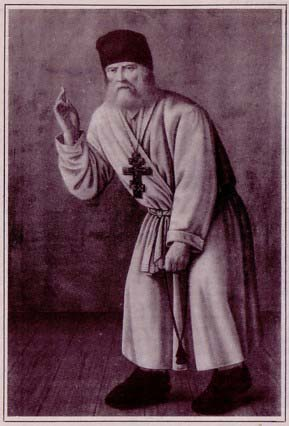
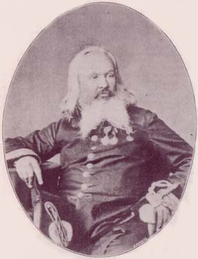
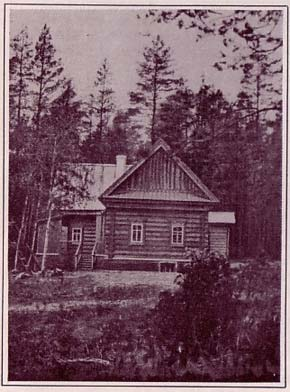
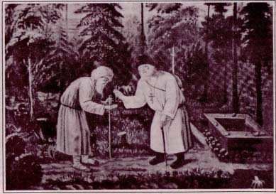
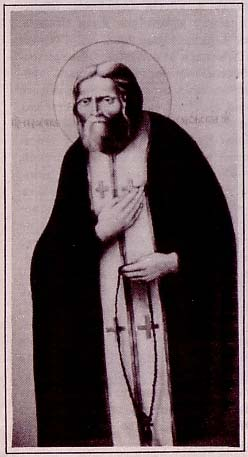
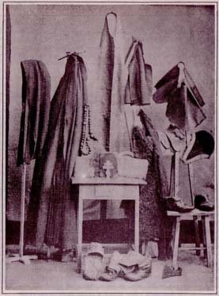
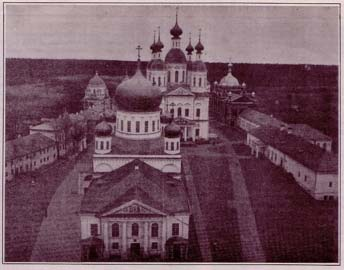
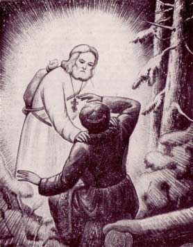
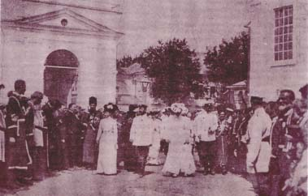

# О ЦЕЛИ ХРИСТИАНСКОЙ ЖИЗНИ
## БЕСЕДА ПРЕПОДОБНОГО СЕРАФИМА САРОВСКОГО О ЦѢЛИ ХРИСТIАНСКОЙ ЖИЗНИ
изъ рукописи Мотовилова
Духъ Божiй, явно почивающiй на Отцѣ Серафимѣ Саровскомъ въ беседѣ его о цели Христiанской жизни съ симбирским помѣщикомъ и совестнымъ судьей Николаемъ Александровичемъ Мотовиловымъ.
Передъ самымъ прославленіемъ Преподобнаго Серафима, въ 1903 году, Сергѣемъ Нилусомъ были обнаружены записи друга и почитателя святаго, Николая А. Мотовилова, гдѣ оказалось цѣлое богословское поученіе Прп. Серафима о Стяжаніи Духа Святаго въ полномъ согласіи съ ученіемъ Св. Отцовъ Церкви. До 1917 года было выпущено нѣсколько изданій этой Бесѣды, съ которыхъ перепечатывались всѣ заграничныя изданія ея. Но наканунѣ революціи С. Нилусъ, окончательно обслѣдовавъ рукопись, издалъ дефинитивный текстъ 1917-го года, съ которого мы и печатаемъ тутъ безъ измѣненій, пополнивъ лишь предисловіемъ съ уже давно разошедшейся книги, изданной нашимъ Св. Германовскимъ Братствомъ въ 1968 году.
«ПРЕДИСЛОВIЕ»

Валаамскiй портретъ Прпд. Серафима
Бесѣда Преподобнаго и Богоноснаго Отца нашего Серафима Саровскаго Чудотворца о цѣли Христіанской жизни имѣетъ огромное значеніе, оно чутьли ни самое важное, что имѣется о немъ.
Какъ богословское поученіе, оно произнесено однимъ изъ самыхъ великихъ святыхъ Православной Церкви, равнымъ святымъ отцамъ древности. Какъ нѣчто подлинное, оставшееся во свидѣтельство святости великаго праведника Русской Церкви, - оно явно откровеніе свыше. Совершенно необыкновенно нахожденіе его передъ самымъ прославленіемъ великаго тайнозрителя. Совершенно поразительно и значеніе этого "изъ инаго міра пришедшаго" поученія, какъ бы предназначеннаго для христіанина 20-го вѣка! Удивительно еще и то, кому именно было суждено обрѣсти это дивное сокровище и при какихъ условіяхъ обнародовать всему сословію Великой Россіи, именно наканунѣ историческаго исчезновенія Святой Руси съ земли... А намъ, Зарубежной Руси, вмѣнилось передать дальше, людямъ всего міра, кто только "имѣетъ уши слышать" и сердце, готовое принять пламенныя слова Самой Истины, исходящія изъ устъ дѣйствительно серафима небеснаго - нашего дражайшаго и родненькаго Батюшки Серахвима.
Чудо явленія на нашу грѣшную землю этого серафима, помимо того, что оно и по сей день живетъ и дышетъ въ нашей церковной жизни, еше не сказало своего послѣдняго слова, еще не завершилось оно. Преподобный Серафимъ есть достояніе всей Вселенской Церкви Христовой, единой и подлинной. Заключая свою Бесѣду, Преподобный говоритъ Мотовилову, своему собесѣднику: "... Господь поможетъ вамъ навсегда удержать это (ученіе о Святомъ Духѣ) въ памяти вашей... тѣмъ болѣе, что и не для васъ однихъ дано вамъ разумѣть это, а черезъ васъ для цѣлаго міра ..." Не явился еще многимъ невѣдущимъ и во тьмѣ находящимся Преподобный, не обжегъ еще сердца Божественной любовью Серафимъ, дабы сдѣлать имъ свой окончательный выборъ, и послѣдней трубѣ возгремѣть ... Но быстрымъ темпомъ сгущается беззаконіе на нашей грѣшной землѣ и, видно, скоро быть концу ея, ибо вѣсть о Преподобномъ Серафимѣ распространяется.
Обрѣтена эта Бесѣда была Сергіемъ Александровичемъ Нилусомъ. Это былъ замѣчательный человѣкъ. Недаромъ самъ Преподобный его избралъ быть какъ-бы новымъ "служкой убогаго Серафима" и онъ въ дѣйствительности послужилъ святому какь изданіемъ Бесѣды, такъ и вообще своими писательскими трудами. Ниже приводится полный текстъ съ третьяго и послѣдняго изданія Бесѣды, который былъ Нилусомъ поправленъ и снабженъ предисловіемъ, послѣсловіемъ и замѣтками еще никогда не опубликованными. Бесѣда составляегь одну изъ главъ его первой и въ высшей степени интересной книги "Великое въ Маломъ", посвященной "съ чувствомъ благоговѣйной признательности" своему чудесному исцѣлителю Святому Праведному Отцу Іоанну Кронштадтскому.
Глѣбъ Подмошенскій Лѣто, 1967 г.
«ПРЕДИСЛОВIЕ С.А.НИЛУСА»

Николай Александровичь Мотовиловъ
Во время пребыванія Аполлоса въ Коринфѣ, Павелъ, прошедъ верхнія страны, прибылъ въ Ефесъ и, нашедъ тамъ нѣкоторыхъ учениковъ, сказалъ имъ: приняли ли вы Святаго Духа, увѣровавши? Они же сказали ему: мы даже и не слыхали, есть ли Духъ Святой. Онъ сказалъ имъ: во что же вы крестились? Они отвѣчали: во Іоанново крещеніе. Павелъ сказалъ: Іоаннъ крестилъ крещеніемъ покаянія, говоря людямъ, чтобы вѣровали въ Грядущаго по немъ, то есть во Христа Іисуса. Услышавши это, они крестились во имя Господа Іисуса, и, когда Павелъ возложилъ на нихъ руки, нисшелъ на нихъ Духъ Святый, и они стали говорить иными языками и пророчествовать. Всѣхъ ихъ было человѣкъ около двѣнадцати. (Дѣяніе XIX, 1-7).
И вотъ, нынѣ я по влеченію Духа иду въ Іерусалимъ, не зная, что тамъ встрѣтится со мною; только Духъ Святый по всѣмъ городамъ свидѣтельствуетъ, говоря, что узы и скорби ждутъ меня. (Дѣяніе XX, 22-23).
И слово мое и проповѣдь моя не въ убѣдительныхъ словахъ человѣческой мудрости, но въ явленіи духа и силы, чтобы вѣра ваша утверждалась не на мудрости человѣческой, но на силѣ Божіей. (1 Кор. 11,4-5).
*А намъ Богъ открылъ это Духомъ Своимъ; ибо Духъ все проницаетъ, и глубины Божіи* (1 Кор. II, 10).
Душевный человѣкъ не принимаетъ того, что отъ Духа Божія, потому что онъ почитаетъ это безуміемъ; и не можетъ разумѣть. (1 Кор. II, 14).
Я былъ въ духѣ въ декь воскресный и слышалъ позади себя громкій голосъ, какъ бы трубный, который говорилъ: Я есмь Альфа и Омега, первый и послѣдній. (Откр. 1, 10).
За мѣсяцъ до Высочайшаго повелѣнія объ ускореніи производящагося въ Святѣйшемъ Синодѣ дѣла о прославленіи Святаго Угодника Божія, Серафима Саровскаго, Господь привелъ меня опять въ Саровъ и Дивѣевъ. Изъ трехъ современницъ о. Серафима, которыхъ я встрѣтилъ въ первую свою поѣздку, я засталъ въ живыхъ одну только Елену Ивановну Мотовилову. Вскорѣ послѣ моего отъѣзда, въ 1900 году, отошла въ селенія праведныхъ мать Ерміонія; на Пасху, два года спустя, за ней ушла и мать Еванфія.
Сильно за эти годы сдалась и Елена Ивановна: согнулся станъ, стали меркиуть еще такъ недавно свѣтлыя и проницательныя очи. Серафиму не нужно уже земныхъ свидѣтелей его праведности, онъ зоветъ ихъ къ себѣ въ мѣста вѣчнаго упокоенія, видѣть и раздѣлять съ нимъ его славу, ту нетлѣнную и вѣчную, неувядаюшую славу, которую Господь отъ вѣка уготовалъ всѣмъ любящимъ Его, «идѣже лица святыхъ, Господи, и праведницы сіяютъ, яко солнце!»
Но свѣжесть ума и памяти не покинула еще родной старушки. Прошлое живеть и расцвѣтаетъ въ ея воспоминаніяхъ, и время не имѣетъ власти надъ ними!..
По просьбѣ моей, съ разрѣшенія игуменіи, Елена Ивановна дала мнѣ, цѣлый коробъ бумагъ, оставшихся послѣ покойнаго ея мужа, Николая Александровича. Всякій, кто интересовался житіемъ отца Серафима, долженъ знать это имя, которое такъ тѣсно связано сь именемъ Батюшки и устроенной имъ Дивѣевской женской обители. Непонятымъ жилъ этоть человѣкъ, неоцѣненнымъ и умеръ, но былъ онъ при жизни «служкой Серафимовымъ», какъ онъ самъ любилъ называть себя, такимъ и послѣ смерти остался. Въ бумагахъ его довелось мнѣ найти такое сокровище, которое по справедливости можеть быть названо величайшимъ свидѣтельствомъ вѣры. Этой драгоцѣнностью, съ сохраненіемъ всей своеобразности слога сороковыхъ годовъ минувшаго столѣтія, на которомъ она написана, я и желаю подѣлиться съ православнымъ читателемъ.
I. ПРИГЛАШЕНIЕ
«Истинно, истинно говорю вамъ: вѣрующій въ Меня, дѣла, которыя творю Я, и онъ сотворитъ, и больше сихъ сотворитъ ...»
(Іоан. 14,12)
Старое литографическое изображенiе Прпд. Серафима находящееся въ трапезной Ново-Дивѣевского монастыря въ штатѣ Нью-Йорке
«Однажды», - пишетъ въ своихъ запискахъ Мотовиловъ: - «это было въ Саровской пустыни, вскорѣ послѣ исцѣленія моего, въ началѣ зимы 1831 года, во вторникъ конца ноября, я стоялъ во время вечерни въ тепломъ соборѣ Живоноснаго Источника на обыкновенномъ, какъ и потомъ всегда бывало, мѣстѣ моемъ, прямо противъ чудотворной иконы Божіей Матери. Тугь подошла ко мнѣ одна изъ сестеръ Мельничной общины Дивѣевской. О названіи и существованіи этой общины, отдѣльной отъ другой церковной, тоже Дивѣевской общины, я не имѣлъ тогда еще никакого понятія. Эта сестра сказала мнѣ:
- Ты что ли хроменькій баринъ, котораго исцѣлилъ вотъ недавно нашъ батюшка, отецъ Серафимъ?
Я отвѣчалъ, что это именно я и есть.
- Ну, такъ, - сказала она, - иди къ батюшкѣ - онъ велѣлъ позвать тебя къ себѣ. Онъ теперь въ кельѣ своей въ монастырѣ, и сказалъ, что будетъ ждать тебя.
Люди, хоть разъ при жизни великаго старца Серафима бывшіе въ Саровской пустыни и хоть только слышавшіе о немъ, могутъ постигнуть вполнѣ, какой неизъяснимою радостію наполнилась душа моя при этомъ нечаянномъ зовѣ его. Оставивъ слушаніе Божественной службы, я немедленно побѣжалъ къ нему, въ келію его. Батюшка о. Серафимъ встрѣтилъ меня въ самихъ дверяхъ сѣней своихъ и сказалъ мнѣ:
- Я ждалъ ваше Боголюбіе. И вотъ только немного повремените, пока я поговорю съ сиротами моими. Я имѣю много и съ вами побесѣдовать. Садитесь вотъ здѣсь.
При этихъ словахъ онъ указалъ мнѣ на лѣсенку съ приступками, сдѣланную, вѣроятно, для закрыванія трубъ печныхъ и поставленную противъ печки его, устьемъ въ сѣни, какъ и во всѣхъ двойныхъ кельяхъ Саровскихъ устроенной. Я сѣлъ было на нижнюю ступеньку. но онъ сказалъ мнѣ:
- Нѣтъ, повыше сядьте.
Я пересѣлъ на вторую, но онъ сказалъ мнѣ:
- Нѣтъ, ваше Боголюбіе. На самую верхнюю ступеньку садиться извольте. И, усадивъ меня, прибавилъ:
- Ну, вотъ сидите же тутъ и подождите, когда я, побесѣдовавъ съ сиротами моими, выйду къ вамъ.
Батюшка ввелъ къ себѣ въ келью двухъ сестеръ, изъ коихъ одна была дѣвица изъ дворянъ, сестра Нижегородскаго помѣщика Манторова, Елена Васильевна, какъ о томъ мнѣ на мой спросъ сказали оставшіеся со мной въ сѣнцахъ.
Долго я сидѣлъ въ ожиданіи, когда и для меня отворитъ дверь великій старецъ. Думаю, сидѣлъ я такъ часа два. Вышелъ ко мнѣ изъ другой, ближайшей ко входу въ сѣни сей кельи, келейникъ о. Серафима, Павелъ, и, несмотря на отговоры мои; убѣдилъ меня посѣтить его келью и сталъ мнѣ дѣлать разныя наставленія къ жизни духовной, въ самомъ же дѣлѣ имѣвшія цѣлью, по наущенію вражьему, ослабить мою любовь и вѣру въ заслуги передъ Богомъ великаго старца Серафима.
Мнѣ стало грустно, и я со скорбью сказалъ ему:
- Глупъ я былъ, о. Павелъ, что, послушавшись убѣжденій вашихъ, вошелъ къ вамъ въ келью. Отецъ игуменъ Нифонтъ - великій рабъ Божій, но и тутъ въ Саровскую пустынь я не для него пріѣзжалъ и пріѣзжаю, но лишь для одного батюшки о. Серафима, о коемъ думаю, что и въ древности мало было такихъ святыхъ угодниковъ Божіихъ, сдаренныхъ силою Иліиною и Моисеевою. Вы же кто такіе, что навязываетесь ко мнѣ съ вашими наставленіями, тогда какъ догадываюсь я, вы и пути то Божьяго порядочно сами не знаете. Простите меня - я сожалѣю, что послушалъ васъ и зашелъ къ вамъ въ келью.
Съ тѣмъ и вышелъ я отъ него и сѣлъ опять на верхнюю ступеньку лѣсенки въ сѣнцахъ батюшкиной кельи. Потомъ я слышалъ отъ того же о. Павла, что батюшки грозно за это ему выговаривалъ, говоря ему: «не твое дѣло бесѣдовать съ тѣми, которые убогаго Серафима слова жаждутъ и къ нему пріѣзжаютъ въ Саровъ. И я самъ, убогій, не свое имъ говорю, но что Господь изволилъ мнѣ открыть для назиданія. Не мѣшайся не въ свои дѣла. Себя самого знай, а учить никогда никого не смѣй: не далъ Богъ тебѣ этого дара - вѣдь онъ подается недаромъ людямъ, а за заслуги ихъ передъ Господомъ Богомъ нашимъ и по особенной Его милости и Божественному о людяхъ смотрѣнію и Святому Промыслу Его». Вписываю я это сюда для памяти и назиданія дорожащихъ и малою рѣчью и едва замѣтною чертою характера великаго старца Серафима.
Когда же около двухъ часовъ побесѣдовалъ старецъ со своими сиротами, тогда дверь отворилась и батюшка, о. Серафимъ, проводивъ сестерь, сказалъ мнѣ:
- Долго задержалъ я васъ, ваше Боголюбіе. Не взыщите. Вотъ сиротки мои нуждались во многомъ: такъ я, убогій, и утѣшилъ ихъ. Пожалуйте въ келью.
Въ кельѣ этой, своей монастырской, онъ побесѣдовалъ со мною о разныхъ предметахъ, относившихся до спасенія души и до жизни мірской, и велѣлъ мнѣ съ отцомъ Гуріемъ Саровскимъ гостинникомъ, на другой день, послѣ ранней обѣдни, ѣхать къ нему въ ближнюю пустыньку.
II. ИЗВОЛЕНIЕ ГОСПОДНЕ

Общiй видъ дальней пустыньки въ настоящее время въ Саровской обители
Цѣлую ночь проговорили мы съ о. Гуріемъ про о. Серафима, цѣлую ночь, почти не спавши отъ радости, и на другой день отправились мы къ батюшкѣ о. Серафиму въ его ближнюю пустыньку, даже ничего не пивши, и ничего не закусивши; и цѣлый день до поздней ночи не пивши, не ѣвши, пробыли у дверей этой ближней его пустыньки. Тысячи народа приходили къ великому старцу, и всѣ отходили, не получивъ его благословенія, а, постоявъ немного въ его сѣнцахъ, возвращались вспять; человѣкъ семь или восемь остались съ нами ждать конца этого дня и выхода изъ пустыньки батюшки о. Серафима: въ томъ числѣ, какъ сейчасъ помню, была жена Балахнинскаго казначея, изъ уѣзднаго города Нижегородской губерніи Балахны, и какая-то странница, все хлопотавшая объ открытіи святыхъ мощей Пафнутія, кажется, въ Балахнѣ нетлѣнно почивающаго.
Онѣ рѣшились съ нами дождаться отворенія дверей великаго старца. Наконецъ, и онѣ смутились духомъ, даже самъ о. Гурій, вечеру уже позднему наставшу, очень смутился и сказалъ мнѣ:
- Уже темно, батюшка, и лошадь проголодалась, и мальчикъ кучеръ ѣсть, вѣроятно, хочетъ. Да какъ бы, если позже поѣдемъ, и звѣри на насъ не напали бы.
Но я сказалъ:
- Нѣтъ, батюшка, о. Гурій, поѣзжайте вы одинъ назадъ, если боитесь чего, а меня пусть хотя и звѣри растерзаютъ здѣсь, а я не отойду отъ двери батюшки о. Серафима, хоть бы мнѣ и голодною смертью при нихъ пришлось умереть; я все-таки стану ждать его, покуда отворитъ онъ двери святой своей кельи.
И батюшка о. Серафимъ, весьма немного погодя, дѣйствительно, отворилъ двери своей кельи и, обращаясь ко мнѣ сказалъ:
- Ваше Боголюбіе, я васъ звалъ, но не взыщите, что я не отворялъ цѣлый день: нынѣ среда, и я безмолвствую; а вотъ завтра - милости просимъ, я радъ буду душевно съ вами побесѣдовать. Но уже не такъ рано извольте жаловать ко мнѣ, а то, не кушавши цѣлый день, вы изнемогли вельми. А такъ - послѣ поздней обѣдни, да подкрѣпивши себя довольно пищею, пожалуйте съ о. Гуріемъ ко мнѣ. Теперь грядите и подкрѣпитесь пищею - вы изнемогли.
И сталъ насъ, начиная съ меня, благословлять и сказалъ о. Гурію:
- Такъ, другъ, такъ-то, радость моя, завтра съ господиномъ пожалуйте ко мнѣ, на ближайшую мою пажнинку, - тамъ меня обрящете; а теперь грядите съ миромъ. До свиданія, ваше Боголюбіе.
Съ этими словами батюшка опять затворился.

Преп. Серафимъ благословляетъ возвращенiе паломника
Никакое слово не можетъ выразить той радости, которую я ощутилъ въ сердцѣ моемъ. Я плавалъ въ блаженствѣ. Мысль, что, несмотря на долготерпѣніе цѣлаго дня, я хоть подъ конецъ да сподобился однако же не только узрѣть лицо о. Серафима, но и слышать привѣтъ его Богодухновенныхъ словесъ, такъ утѣшила меня. Да, я былъ на высотѣ блаженства, никакимъ земнымъ подобіемъ неизобразимой. И несмотря на то, что я цѣлый день не пилъ, не ѣлъ, я сдѣлался такъ сыть, что, какъ будто, наѣлся до пресыщенія и напился до разумнаго упоенія. Говорю истину, хоть, можетъ быть, для нѣкоторыхъ, не испытавшихъ на дѣлѣ, что значитъ сладость, сытость и упоенье, которыми преисполняется человѣкъ во время наитія Духа Божія, слова мои и покажутся преувеличенными и разсказъ черезчуръ восторженнымъ. Но увѣряю совѣстью православно-христіанскою, что нѣтъ здѣсь преувеличенья,
а все сказанное сейчасъ мною есть не только сущая истина, но даже и весьма слабое представленіе того, что я дѣйствительно ощущалъ въ сердцѣ моемъ.
Но кто дастъ мнѣ глаголъ, могущій хоть мало, хоть отчасти, выразить, что восчувствовала душа моя на слѣдующій день?
III. ЦѢЛЬ ХРИСТIАНСКОЙ ЖИЗНИ

Преп. Серафимъ
Это было въ четвергъ. День былъ пасмурный. Снѣгу было на четверть на землѣ, а сверху порошила довольно густая снѣжная крупа, когда батюшка о. Серафимъ началъ бесѣду со мной въ ближней пажнинкѣ своей, возлѣ той же его ближней пустыньки противъ рѣчки Саровки, у горы, подходящей близко къ берегамъ ея.
Помѣстилъ онъ меня на пнѣ только-что имъ срубленнаго дерева, а самъ сталъ противъ меня на корточкахъ.
- Господь открылъ мнѣ, - сказалъ великій старецъ, что въ ребячествѣ вашемъ вы усердно желали знать, въ чемъ состоитъ цѣль жизни нашей христіанской, и у многихъ великихъ духовныхъ особъ вы о томъ неоднократно спрашивали...
Я долженъ сказать тутъ, что съ 12-тилѣтняго возраста меня эта мысль неотступно тревожила, и я, дѣйствительно, ко многимъ изъ духовныхъ лицъ обращался съ этимъ вопросомъ, но отвѣты ихъ меня не удовлетворяли. Старцу это было неизвѣстно.
- Но никто, - продолжалъ о. Серафимъ, - не сказалъ вамъ о томъ опредѣлительно. Говорили вамъ: ходи въ церковь, молись Богу, твори заповѣди Божіи, твори добро - вотъ тебѣ и цѣль жизни христіанской. А нѣкоторые даже негодовали на васъ за то что вы заняты не Богоугоднымъ любопытствомъ и говорили вамъ: высшихъ себя не ищи. Но они не такъ говорили, какъ бы слѣдовало. Вотъ я убогій Серафимъ, растолкую вамъ теперь, въ чемъ, дѣйствительно, эта цѣль состоитъ.
Молитва, постъ, бдѣніе и всякія другія дѣла христіанскія сколько ни хороши они сами по себѣ, однако, не въ дѣланіи только ихъ состоитъ цѣль нашей христіанской жизни, хотя они и служатъ необходимыми средствами для достиженія ея. Истинная же цѣль жизни нашей христіанской состоитъ въ стяжаніи ДУХА СВЯТАГО БОЖЬЯГО. Постъ же и бдѣніе, и молитва и милостыня, и всякое Христа ради дѣлаемое доброе дѣло суть средства для стяжанія Святаго Духа Божьяго. Замѣтьте, батюшка, что лишь только ради Христа дѣлаемое доброе дѣло, приноситъ намъ плоды Святаго Духа. Все же не ради Христа дѣлаемое, хотя и доброе, но мзды въ жизни будущаго вѣка намъ не представляетъ, да и въ здѣшней жизни благодати Божіей тоже не даетъ. Вотъ почему Господь Іисусъ Христосъ сказалъ: «всякъ, иже не собираетъ со Мною, той расточаетъ». Доброе дѣло иначе нельзя назвать, какъ собираніемъ, ибо хотя оно и не ради Христа дѣлается, однако же добро.
Писаніе говоритъ: «во всякомъ языцѣ бойся Бога и дѣлаяй правду, пріятенъ Ему есть». И, какъ видимъ изъ послѣдовательности священнаго повѣствованія, этотъ «дѣлаяй правду» до того пріятенъ Богу, что Корнилію сотнику, боявшемуся Бога и дѣлавшему правду, явился ангелъ Господень во время молитвы его и сказалъ: «Пошли въ Іоппію къ Симону Усмарю, тамо обрящеши Петра и той ти речетъ глаголы живота вѣчнаго, въ нихъ спасешися ты и весь домъ твой».
Итакъ, Господь всѣ Свои Божественныя средства употребляетъ, чтобы доставить такому человѣку возможность за свои добрыя дѣла не лишіиться награды въ жизни пакибытія. Но для этого надо начать здѣсь правой вѣрой въ Гослода нашего Іисуса Христа, Сына Божія, пришедшаго въ міръ грѣшныя спасти, и пріобрѣтеніемъ себѣ благодати Духа Святаго, Вводящаго въ сердца наши Царствіе Божіе и Прокладывающаго намъ дорогу къ пріобрѣтенію блаженства жизни будущаго вѣка.
Но тѣмъ и ограничивается эта пріятность Богу дѣлъ добрыхъ, не ради Христа дѣлаемыхъ: Создатель нашъ даетъ средства на ихъ осуществленіе. За человѣкомъ остается или осуществлять ихъ, или нѣтъ. Вотъ почему Господь сказалъ Евреямъ: «аще не бысте видѣли, грѣха не бысте имѣли. Нынѣ же глаголете - видимъ, и грѣхъ вашъ пребываетъ на васъ». Воспользуется человѣкъ, подобно Корнилію, пріятностью Богу дѣла своего, не ради Христа сдѣланнаго, и увѣруетъ въ Сына Его, то, такого рода дѣло вмѣнится ему, какъ бы ради Христа сдѣланное и только за вѣру въ Него. Въ противномъ же случаѣ человѣкъ не въ правѣ жаловаться, что добро его не пошло въ дѣло. Этого не бываетъ никогда только при дѣланіи какого либо добра Христа ради, ибо добро, ради Него сдѣланное, не только въ жизни будущаго вѣка вѣнецъ правды ходатайствуетъ, но и въ здѣшней жизни преисполняетъ человѣка
благодатію Духа Святаго и притомъ, какъ сказано: «не въ мѣру бо даетъ Богъ Духа Святаго. Отецъ бо любитъ Сына и вся даетъ въ руцѣ Его».
Такъ-то, ваше Боголюбіе. Такъ въ стяжаніи этого-то Духа Божія и состоитъ истинная цѣль нашей жизни христіанской, а молитва, бдѣніе, постъ, милостыня и другія ради Христа дѣлаемыя добродѣтели суть только средства къ стяжанію Духа Божіяго.
- Какъ же стяжанія? - спросилъ я батюшку Серафима: - я что-то этого не понимаю.
- «Стяжаніе все равно, что пріобрѣтеніе, - отвѣчалъ мнѣ онъ: - вѣдь вы разумѣете, что значитъ стяжаніе денегъ? Такъ все равно и стяжаніе Духа Божія. Вѣдь вы, ваше Боголюбіе, понимаете, что такое въ мірскомъ смыслѣ стяжаніе? Цѣль жизни мірской обыкновенныхъ людей есть стяжаніе, или наживаніе денегъ, а у дворянъ сверхъ того - полученіе почестей, отличій и другихъ наградъ за государственныя заслуги. Стяжаніе Духа Божія есть тоже капиталъ, но только благодатный и вѣчный, и онъ, какъ и денежный, чиновный и временный, пріобрѣтается одними и тѣми же путями, очень сходственнъіми другъ съ другомъ.
Богъ Слово, Господь нашъ Богочеловѣкъ Іисусъ Христосъ уподобляетъ жизнь нашу торжищу и дѣло жизни нашей на землѣ именуетъ куплею, и говоритъ всѣмъ намъ: «купуйте, дондеже пріиду, искупующе время, яко дніе лукави суть», т. е. выгадывайте время для полученія небесныхъ благъ черезъ земные товары.
Земные товары - это добродѣтели, дѣлаемыя Христа ради, доставляющія намъ благодать Всесвятаго Духа. Въ притчѣ о мудрыхъ и юродивыхъ дѣвахъ,
когда у юродивыхъ недоставало елея, сказано: «шедши купите на торжищи». Но когда онѣ купили, двери въ чертогъ брачный уже были затворены, и онѣ не могли войти въ него. Нѣкоторые говорятъ, что недостатокъ елея у юродивыхъ дѣвъ знаменуегь недостатокъ у нихъ прижизненныхъ добрыхъ дѣлъ. Такое разумѣніе не вполнѣ правильно. Какой же у нихъ былъ недостатокъ въ добрыхъ дѣлахъ, когда онѣ хоть юродивыми, да все же дѣвами называются. Вѣдь дѣвство есть наивысочайшая добродѣтель, какъ состояніе равноангельское, и могло бы служить замѣной само по себѣ всѣхъ прочихъ добродѣтелей. Я, убогій, думаю, что у нихъ именно благодати Всесвятаго Духа Божьяго не доставало. Творя добродѣтели, дѣвы эти, по духовному своему неразумію, полагали, что въ томъ-то и дѣло лишь христіанское, чтобы однѣ добродѣтели дѣлать. Сдѣлали мы, де, добродѣтель и тѣмъ, де, и дѣло Божіе сотворили,
а до того, получена ли была ими благодать Духа Божія, достигли ли онѣ ея, имъ и дѣла не было. Про такіе-то образы жизни, опирающіеся лишь на одно твореніе добродѣтели безъ тщательнаго испытанія, приносятъ ли онѣ и сколько именно приносятъ благодати Духа Божьяго, и говорится въ отеческихъ книгахъ: «инъ есть путь, мняйся быти благимъ въ началѣ, но концы его - во дно адово». (Есть пути, которые кажутся человеку прямыми, но конецъ ихъ путь к смерти).
Антоній великій въ письмахъ своихъ къ монахамъ говоритъ про такихъ дѣвъ: «многіе монахи и дѣвы не имѣютъ никакого понятія о различіяхъ въ воляхъ, дѣйствующихъ въ человѣкѣ, и не вѣдаютъ, что въ насъ дѣйствуютъ три воли: первая Божія, всесовершенная и всеспасительная; вторая собственная своя, человѣческая, т. е., если не пагубная, то и не спасительная, и третья бѣсовская - вполнѣ пагубная.
И вотъ эта-то третья вражеская воля и научаетъ человѣка или не дѣлать никакихъ добродѣтелей, или дѣлать ихъ изъ тщеславія, или для одного добра,
а не ради Христа. Вторая - собственная воля наша научаетъ насъ дѣлать все въ услажденіе нашимъ похотямъ, а то и, какъ врагъ научаетъ, творить добро ради добра, не обращая вниманія на благодать, имъ пріобрѣтаемую. Первая же - воля Божія и всеспасительная въ томъ только и состоитъ, чтобы дѣлать добро единственно лишь для стяжанія Духа Святаго, какъ сокровища вѣчнаго, неоскудѣваемаго и ничѣмъ вполнѣ и достойно оцѣниться на могущаго. Оно-то, это стяжаніе Духа Святаго, собственно и называется тѣмъ елеемъ, котораго недоставало у юродивыхъ дѣвъ. За то-то онѣ и названы юродивыми, что забыли о необходимомъ плодѣ добродѣтели, о благодати Духа Святаго, безъ Котораго и спасенія никому нѣтъ и быть не можеть, ибо: «Святымъ Духомъ всяка душа живится и чистотою возвышается, свѣтлѣетъ же Тройческимъ единствомъ священно тайне». Самъ Духъ Святый вселяется въ души наши, и это-то самое вселеніе въ души наши Его, Вседержителя,
и сопребываніе съ духомъ нашимъ Его Тройческаго Единства и даруется намъ лишь черезъ всемѣрное сь нашей стороны стяжаніе Духа Святаго. которое и предуготовляетъ въ душѣ и плоти нашей престолъ Божіему всетворческому съ духомъ нашимъ сопребыванію, по непреложному слову Божіему: «вселюся въ нихъ и похожу, и буду имъ въ Бога, и тіи будутъ въ людіе Мои». Вотъ это-то и есть тоть елей въ свѣтильникахъ у мудрыхъ дѣвъ, который могъ свѣтло и продолжительно горѣть, и дѣвы тѣ съ этими горящими свѣтильниками могли дождаться и Жениха, пришедшаго въ полунощи, и войти съ Нимъ въ чертогъ радости. Юродивыя же, видѣвши, что угасаютъ ихъ свѣтильники, хотя и пошли на торжище, да купятъ елея, но не успѣли возвратиться во время, ибо двери уже были затворены. Торжище - жизнь наша; двери чертога брачнаго, затворенныя и не допустившія къ Жениху - смерть человѣческая; дѣвы мудрыя и юродивыя души христіанскія; елей - не дѣла,
но получаемая черезъ нихъ во внутрь естества нашего благодать Всесвятаго Духа Божія, претворяющая оное отъ сего въ сіе, т. е. отъ тлѣнія въ нетлѣніе, отъ смерти душевной въ жизнь духовную, отъ тьмы въ свѣтъ, отъ вертепа существа нашего, гдѣ страсти привязаны, какъ скоты и звѣри - въ храмъ Божества, въ пресвѣтлый чертогъ вѣчнаго радованія о Христѣ Іисусѣ Господѣ нашемъ, Творцѣ и Избавителѣ и Вѣчномъ Женихѣ душъ нашихъ.
Сколь велико состраданіе Божіе къ нашему бѣдствію, т.е. невниманію къ Его о насъ попеченію, когда Богъ говоритъ: «се стою при дверяхъ и толку»... разумѣя подъ дверями теченіе нашей жизни, еще не затворенной смертью. О, какъ желалъ бы я, ваше Боголюбіе, чтобы въ здѣшней жизни вы всегда были въ Духѣ Божіемъ. «Въ чемъ застану, въ томъ и сужу», говоритъ Господь. Горе, великое горе, если застанетъ Онъ насъ отягошенными попеченіями и печалями житейскими,
ибо кто стерпитъ гнѣвъ Его и противъ лица гнѣва Его кто станетъ. Вотъ почему сказано: «бдите и молитеся, да не внидите въ напасть», т. е. да не лишитеся Духа Божія; ибо бдѣніе и молитва приносятъ намъ благодать Его. Конечно, всякая добродѣтель, творимая ради Христа, даеть благодать Духа Святаго, но болѣе всего даетъ молитва, потому что она какъ бы всегда въ рукахъ нашихъ, какъ орудіе для стяжанія благодати Духа. Захотѣли бы вы, напримѣръ, въ церковь сходить, да либо церкви нѣтъ, либо служба отошла; захотѣли бы нищему подать, да нищаго нѣтъ, либо нечего дать; захотѣли бы дѣвство соблюсти, да силъ нѣтъ этого исполнить по сложенію вашему или по усиліямъ вражескихъ козней, которымъ вы по немощи человѣческой противостоять не можете; захотѣлй бы и другую какую-либо добродѣтель ради Христа сдѣлать, да тоже силъ нѣтъ, или случая сыскать не можно.
А до молитвы это уже никакъ не относится: на нее всякому и всегда есть возможность - и богатому и бѣдному, и знатному и простому, и сильному и слабому, и здоровому и больному, и праведнику и грѣшнику. Какъ велика сила молитвы даже и грѣшнаго человѣка, когда она отъ всей души возносится, судите по слѣдующему примѣру Священнаго Преданія: когда по просьбѣ отчаянной матери, лишившейся единороднаго сына, похищеннаго смертью, жена-блудница, попавшаяся ей на пути и даже еще отъ только что бывшаго грѣха не очистившаяся, тронутая отчаянной скорбью матери, возопила ко Господу: «не мене ради грѣшницы окаянной, но слезъ ради матери, скорбящей о сынѣ своемъ и твердо увѣренной въ милосердіи и всемогуществѣ Твоемъ, Христе Боже, Воскреси, Господи, сына ея» ... - и воскресилъ его Господь. Такъ-то, ваше Боголюбіе, велика сила молитвы, и она болѣе всего приноситъ Духа Божіяго, и ее удобнѣе всего всякому исправлять.
Блаженны мы будемъ, когда обрящетъ насъ Господь бдяшими, въ полнотѣ даровъ Духа Его Святаго. Тогда мы можемъ благодерзновенно надѣяться быть восхищенными на облацѣхъ во срѣтеніе Господа на воздусѣ, Грядушаго со славою и силою многою судити живымъ и мертвымъ и воздати коемуждо по дѣламъ его.

Вещи Преп. Серафима, хранившiяся въ Дивѣевѣ
Вотъ, ваше Боголюбіе, за великое счастье считать изволите съ убогимъ Серафимомъ бесѣдовать, увѣрены будучи, что и онъ не лишенъ благодати Господней. То что речемъ о Самомъ Господѣ, Источникѣ приснонеоскудѣвающемъ всякія благостыни и небесныя и земныя. А вѣдь молитвою мы съ Нимъ Самимъ, Всеблагимъ и Животворящимъ Богомъ и Спасомъ нашимъ бесѣдовать удостоиваемся. Но и тутъ надобно молиться лишь до тѣхъ поръ, пока Богъ Духъ Святый не сойдетъ на насъ въ извѣстныхъ Ему мѣрахъ небесной Своей благодати. И когда благоволитъ Онъ посѣтить насъ, то надлежитъ уже перестать молиться. Чего же и молиться тогда Ему: «пріиди и вселися въ ны и очисти ны отъ всякія скверны и спаси Блаже, души наша», когда уже пришелъ Онъ къ намъ, воеже спасти насъ, уповающихъ на Него и призываюшихъ Имя Его святое во истинѣ,
т. е. съ тѣмъ, чтобы смиренно и съ любовью встрѣтить Его, Утѣшителя, внутрь храминъ душъ нашихъ, алчущихъ и жаждущихъ Его пришествія. Я вашему Боголюбію поясню это примѣромъ: вотъ хоть бы вы меня въ гости къ себѣ позвали, и я бы по зову вашему пришелъ къ вамъ и хотѣлъ бы побесѣдовать съ вами. А вы бы все-таки стали меня приглашать: милости, де, просимъ, пожалуйте, дескать, ко мнѣ. То я поневолѣ долженъ былъ бы сказать: что это онъ? изъ ума, что ли выступилъ? Я пришелъ къ нему, а онъ всетаки меня зоветъ. - Такъ-то и до Господа Бога Духа Святаго относится. Потому-то и сказано: «упразднитеся и разумѣйте, яко Азъ есмь Богъ, вознесуся во языцѣхъ, вознесуся на земли», т. е. явлюся и буду являться всякому вѣрующему въ Меня и призывающему Меня и буду бесѣдовать съ нимъ, какъ нѣкогда бесѣдовалъ съ Адамомъ въ раю, съ Авраамомъ и Іаковомъ и съ другими рабами Моими, съ Моисеемъ, Іовомъ и имъ подобными.
Многіе толкуютъ, что это упраздненіе относится только до дѣлъ мірскихъ, т. е. что при молитвенной бесѣдѣ сь Богомъ надобно упраздниться отъ мірскихъ дѣлъ. Но я вамъ по Бозѣ скажу, что хотя и отъ нихъ при молитвѣ необходимо упраздниться, но, когда при всемогушей силѣ вѣры и молитвы, соизволитъ Господь Богъ Духъ Святый посѣтить насъ и пріидетъ къ намъ въ полнотѣ неизреченной Своей благости, то надобно и отъ молитвы упраздниться. Молвитъ душа и въ молвѣ находится, когда молитву творитъ; а при нашествіи Духа Святаго надлежитъ быть въ полномъ безмолвіи, слышать явственно и вразумительно всѣ глаголы живота вѣчнаго, которые Онъ тогда возвѣстить соизволитъ. Надлежить притомъ быть въ полномъ трезвеніи и души, и духа и въ цѣломудренной чистотѣ плоти. Такъ было при горѣ Хоривѣ, когда Израильтянамъ было сказано, чтобы они до явленія Божіяго на Синаѣ эа три дня не прикасались бы и къ женамъ,
ибо Богь нашъ есть «огнь поядаяй все нечистое», и въ общеніе съ имъ не можетъ войти никтоже отъ скверны плоти и духа.
IV. СТЯЖЕНIЕ БЛАГОДАТИ

Внутреннiй видъ Саровской пустыни съ колокольни. Изъ журнала «Кормчiй» за 1913 годъ.
- Ну, а какъ же, батюшка, быть съ другими добродѣтелями, творимыми ради Христа, для стяжанія благодати Духа Святаго? Вѣдь вы мнѣ о молитвѣ только говорить изволите.
- Стяжавайте благодать Духа Святаго и всѣми другими Христа ради добродѣтелями, торгуйте ими духовно, торгуйте тѣми изъ нихъ, которыя вамъ большій прибытокъ даютъ. Собирайте капиталъ благодатныхъ избытковъ благости Божіей, кладите ихъ въ ломбардъ вѣчный Божій изъ процентовъ невещественныхъ и не по четыре или по шести на сто, но по сту на одинъ рубль духовный, но даже еще того въ безчисленное число разъ больше. Примѣрно: даетъ вамъ болѣе благодати Божіей молитва и бдѣніе, бдите и молитесь; много даетъ Духа Божіяго постъ, поститесь; болѣе даеть милостыня, милостыню творите, и такимъ образомъ о всякой добродѣтели, дѣлаемой Христа ради, разсуждайте.
Вотъ я вамъ разскажу про себя, убогаго Серафима. - Родомъ я изъ курскихъ купцовъ. Такъ, когда не былъ я еще въ монастырѣ, мы, бывало, торговали товаромъ. который намъ больше барыша даетъ. Такъ и вы, батюшка, поступайте и, какъ въ торговомъ дѣлѣ, не въ томъ сила чтобы лишь только торговать, а въ томъ, чтобы больше барыша получить, такъ и въ дѣлѣ жизни христіанской не въ томъ сила, чтобы только молиться или другое какое либо доброе дѣло дѣлать. Хотя апостолъ и говоритъ: «непрестанно молитеся», но да вѣдь, какъ помните, и прибавляетъ: «хочу лучше пять словесъ рещи умомъ, нежели тысящи языкомъ». И Господь говоритъ: «не всякъ глаголяй Ми, Господи, Господи, спасется, но творяй волю Отна Моего», т. е. дѣлающій «дѣло Божіе и притомъ съ благоговѣніемъ, ибо проклятъ всякъ, иже творитъ дѣло Божіе съ нерадѣніемъ».
А дѣло Божіе есть: «да вѣруете въ Бога и Его же послалъ есть Іисуса Христа». Если разсудите правильно о заповѣдяхъ Христовыхъ и апостольскихъ, такъ дѣло наше христіанское состоитъ не въ увеличеніи счета добрыхъ дѣлъ, служашихъ къ цѣли нашей христіанской жизни только средствами, но въ извлеченіи изъ нихъ большой выгоды, т. е. вяшемъ пріобрѣтеніи обильнѣйшихъ даровъ Духа Свйтяго.
Такъ желалъ бы я, ваше Боголюбіе, чтобы и вы сами стяжали этотъ приснонеоскудѣвающій источникъ благодати Божіей и всегда разсуждали себя въ Духѣ Божіемъ, вы обрѣтаетесь или нѣть; и если - въ Духѣ Божіемъ, то, благословенъ Богъ - не о чемъ горевать: хоть сейчасъ - на страшный судъ Христовъ. Ибо «въ чемъ застану, въ томъ и сужду». Если же - нѣть, то надобно разобрать, отчего и по какой причинѣ Господь Богъ Духъ Святый изволилъ оставить насъ, и снова искать и доискиваться Его и не отставать до тѣхъ поръ, пока искомый Господь Богъ Духъ Святый не сыщется и не будетъ снова съ нами Своею благодатію. На отгоняющихъ же насъ оть Него враговъ нашихъ надобно такъ нападать, покуда и прахъ ихъ возметется, какъ сказалъ пророкъ Давидъ: «пожену враги моя и постигну я, и не возвращусь, дондеже скончаются, оскорблю ихъ, и не возмогутъ стати, падутъ подъ ногама моима».
Такъ-то, батюшка. Такъ и извольте торговать духовно добродѣтелью. Раздавайте дары благодати Духа Святаго требующимъ по примѣру свѣщи возженной, которая и сама свѣтить, горя земнымъ огнемъ, и другія свѣщи, не умаляя своего собственнаго огня, зажигаетъ во свѣтеніе всѣмъ въ другихъ мѣстахъ. И если это такъ въ отношеніи огня земного, то что скажемъ объ огнѣ благодати Всесвятаго Духа Божія? Ибо, напримѣръ, богатство земное, при раздаваніи его, оскудѣваеть, богатство же небесное Божіей благодати, чѣмъ болѣе раздается, тѣмъ болѣе пріумножается у того, кто его раздаеть. Такъ и Самъ Господь изволилъ сказать Самарянынѣ: «піяй оть воды сей возжаждетъ вновь, а піяй отъ воды, юже Азъ дамъ, не возжаждетъ во вѣки, но вода, юже Азъ дамъ ему, будетъ въ немъ источникъ приснотекущій въ животъ вѣчный».
V. БОГОМАТЕРЬ - ЯЗВА БѢСОВЪ
- Батюшка, - сказалъ я, - вотъ вы все изволите говорить о стяжаніи благодати Духа Святаго, какъ о цѣли христіанской жизни; но какъ же и гдѣ я могу ее видѣть? Добрыя дѣла видны, а развѣ Духъ Святый можеть быть виденъ? Какъ же я буду знать, со мной Онъ или нѣть?
- Мы въ настоящее время, - такъ отвѣчалъ старецъ, - по нашей почти всеобщей холодности къ святой вѣрѣ въ Гослода нашего Іисуса Христа и по невнимательности нашей къ дѣйствіямъ Его Божественнаго о насъ Промысла и общенія человѣка съ Богомъ, до того дошли, что, можно сказать, почти вовсе удалились отъ истинно христіанской жизни. Намъ теперь кажутся странными слова Священнаго Писанія, когда Духъ Божій устами Моисея говоритъ: «И виде Адамъ Господа, ходящаго въ раи», или когда читаемъ у апостола Павла: «идохомъ во Охайю, и Духъ Божій не иде съ нами, обратихомся въ Македонію, и Духъ Божій иде съ нами». Неоднократно и въ другихъ мѣстахъ Священнаго Писанія говорится о явленіи Бога человѣкомъ.
Воть нѣкоторые и говорятъ, «эти мѣста непонятны: неужели люди такъ очевидно могли видѣть Бога?» А непонятнаго тутъ ничего нѣтъ. Произошло это непониманіе от того, что мы удалились отъ простоты первоначальнаго христіанскаго вѣдѣнія и, подъ предлогомъ просвѣщенія, зашли въ такую тьму невѣдѣнія, что намъ уже кажется неудобопостижимымъ то, о чемъ древніе до того ясно разумѣли, что имъ и въ обыкновенныхъ разговорахъ понятіе о явленіи Бога между людьми не казалось страннымъ. Так Іовъ, когда друзья его укоряли въ томъ, что онъ хулитъ Бога, отвѣчалъ имъ: «какъ это можетъ быть, когда я чувствую дыханіе Вседержителево въ ноздрѣхъ моихъ?» Т.е. какъ, де, я могу хулить Бога, то Духъ Святый со мной пребываетъ?
Если бы я хулилъ Бога, то Духъ Святый отступилъ бы отъ меня, а вотъ я и дыханіе Его ощущаю въ ноздрѣхъ моихъ. Такимъ точно образомъ говорится и про Авраама и Іакова, что они видѣли Господа и бесѣдовали съ Нимъ, и Іаковъ даже и боролся съ Нимъ. Моисей видѣлъ Бога и весь народъ съ нимъ, когда онъ сподобился пріять отъ Бога скрижали закона на горѣ Синаѣ. Столпъ облачный и огнянный, или что то же - явная благодать Духа Святаго, служили путеводителями народу Божію въ пустынѣ, Бога и благодать Духа Его Святаго люди не во снѣ видѣли, и не въ мечтаніи, и не въ изступленіи воображенія разстроеннаго, а истинно въявѣ. Очень ужъ мы стали невнимательны къ дѣлу нашего спасенія, отчего и выходить, что мы и многія другія, слова Священнаго Писанія пріемлемъ не въ томъ смыслѣ, какъ бы слѣдовало. И все потому, что не ищемъ благодати
Божіей, не допускаемъ ей, по гордости ума нашего, вселиться въ души наши и потому не имѣемъ истиннаго просвѣщенія отъ Господа, посылаемаго въ сердца людей, всѣмъ сердцемъ алчущихъ и жаждущимъ правды Божіей. Вотъ, напримѣръ, многіе толкують, что, когда въ Библіи говорится - «вдуну Богъ дыханіе жизни въ лице Адама первозданнаго и созданнаго Имъ отъ персти земной» - что будто бы это значило, что въ Адамѣ до этого не было души и духа человѣческаго, а была будто бы лишь плоть одна, созданная отъ персти земной.
Невѣрно это толкованіе, ибо Господь Богъ создалъ Адама оть персти земной въ томъ составѣ, какъ батюшка святый апостолъ Павелъ утверждаетъ: «да будетъ всесовершенъ вашъ духъ, душа и плоть въ пришествіе Господа нашего Іисуса Христа».
И всѣ три сіи части нашего естества созданы были оть персти земной, и Адамъ не мертвымъ былъ созданъ, но дѣйствующимъ животнымъ существомъ, подобно другимъ живущимъ на землѣ, одушевленнымъ Божіимъ созданіемъ. Но вотъ въ чемъ сила, что, если бы Господь Богъ не вдунулъ потомъ въ лице его сего дыханіе жизни, т. е. благодати Господа Бога Духа Святаго, оть Отца исходящаго и въ Сынѣ почивающаго и ради Сына въ міръ посылаемаго, то Адамъ, какъ ни былъ онъ совершенно созданъ надъ прочими Божіими созданіями, какъ вѣнецъ творенія на землѣ, все таки пребылъ бы неимущимъ внутрь себя Духа Святаго, подобенъ всѣмъ прочимъ созданіямъ, хотя и имѣющимъ плоть и душу и духъ, принадлежащимъ.
Когда же вдунулъ Господь въ лице Адамово дыханіе жизни, тогда то, по выраженію Моисееву, и «Адамъ бысть въ душу живу», т. е. совершенно во всемъ Богу подобную и такую, какъ и Онъ, на вѣки вѣковъ безсмертную. Адамъ сотворенъ былъ до того неподлежащимъ дѣйствію ни одной изъ сотворенныхъ Богомъ стихій, что его ни вода не топила, ни огонь не жегъ, ни земля не могла пожрать въ пропастяхъ своихъ, ни воздухъ не могь повредить какимъ бы то ни было своимъ дѣйствіемъ. Все покорено было ему, какъ любимцу Божію, какъ царю и обладателю твари. И все любовалось на него, какъ на всесовершенный вѣнецъ твореній Божіихъ. Отъ этого-то дыханія жизни, вдохнутаго въ лице Адамово изъ Всетворческихъ Устъ Всетворца и Вседержителя Бога, Адамъ до того преумудрился, что не было никогда отъ вѣка, нѣтъ да и едва ли будетъ когда-нибудь на землѣ человѣкъ премудрѣе и многознательнѣе его.
Когда Господь повелѣлъ ему нарещи имена всякой твари, то каждой твари онъ далъ на языкѣ такія названія, которыя знаменуютъ вполнѣ всѣ качества, всю силу и всѣ свойства твари, которыя она имѣетъ по дару Божіему, дарованному ей при ея сотвореніи. Вотъ по этому-то дару вышеестественной Божіей благодати, ниспосланному ему отъ дыханія жизни, Адамъ могъ видѣть и разумѣть и Господа, ходящаго въ раи, и постигать глаголы Его и бесѣду святыхъ Ангеловъ и языкъ всѣхъ тварей и птицъ, и гадовъ, живущихъ на землѣ, и все то, что нынѣ отъ насъ, какъ отъ падшихъ и грѣшныхъ, сокрыто и что для Адама до его паденія было такъ ясно. Такую же премудрость и силу, и всемогущество, и всѣ прочія благія и святыя качества Господь Богъ даровалъ и Евѣ, сотворивъ ее не отъ персти земной, а отъ ребра Адамова въ Едемѣ сладости, въ раи, насажденномъ Имъ посреди земли.
Для того, чтобы они могли удобно и всегда поддерживать въ себѣ безсмертныя, Богоблагодатныя и всесовершенныя свойства сего дыханія жизни, Богъ посадилъ посреди рая древо жизни, въ плодахъ котораго заключилъ всю сущность и полноту даровъ этого Божественнаго Своего дыханія. Если бы не согрѣшили, то Адамъ и Ева сами и все ихъ потомство могли бы всегда, пользуясь вкушеніемъ отъ плода древа жизни, поддерживать въ себѣ вѣчно животворящую силу благодати Божіей и безсмертную, вѣчно юную полноту силъ плоти, души и духа, и непрестанную нестарѣемость безконечно безсмертнаго всеблаженнаго своего состоянія, даже и воображенію нашему въ настоящее время неудобопонятнаго.
Когда же вкушеніемъ отъ древа познанія добра и зла - преждевременно и противно заповѣди Божіей - узнали различіе между добромъ и зломъ и подверглись всѣмъ бѣдствіямъ, послѣдовавшимъ за преступленіе заповѣди Божіей, то лишились этого безцѣннаго дара благодати Духа Божія, такъ что до самаго пришествія въ міръ Богочеловѣка Іисуса Христа Духъ Божій «не убо бѣ въ мірѣ, яко Іисусъ не убо бѣ прославленъ». Однако, это не значитъ, чтобы Духа Божія вовсе не было въ мірѣ, но Его пребываніе не было такимъ полномѣрнымъ, какъ въ Адамѣ или въ насъ, православныхъ христіанахъ, а проявлялось только отвнѣ, и признаки Его пребыванія въ мірѣ были извѣстны роду человѣческому. Такъ, напримѣръ, Адаму послѣ паденія, а равно и Евѣ, вмѣстѣ съ нимъ, были открыты многія тайны, относившіяся до будущаго спасенія рода человѣческаго.
И Каину, несмотря на нечестіе его и его преступленіе удобопонятенъ былъ гласъ благодатнаго Божественнаго, хотя и обличительнаго, собесѣдованія съ нимъ. Ной бесѣдовалъ съ Богомъ. Авраамъ виде Бога и день Его и возрадовался. Благодать Святаго Духа, дѣйствовавшая отвнѣ, отражалась и во всѣхъ ветхозавѣтныхъ пророкахъ и святыхъ Израиля. У евреевъ потомъ заведены были особыя пророческія училища, гдѣ учили распознавать признаки явленія Божіяго или Ангеловъ и отличать дѣйствія Духа Святаго отъ обыкновенныхъ явленій, случающихся въ природѣ неблагодатной земной жизни. Симеону Богопріимцу, Богоотцамъ Іоакиму и Аннѣ, и многимъ безчисленнымъ рабамъ Божіимъ бывали постоянныя, разнообразныя въявѣ Божественныя явленія, гласы, откровенія, оправдывавшіяся очевидными чудесными событіями. Не съ такою силой, какъ въ народѣ Божіемъ, но проявленіе Духа Божьяго дѣйствовало и въ язычникахъ,
не вѣдавшихъ Бога Истиннаго, потому что и изъ ихъ среды Богъ находилъ избранныхъ Себѣ людей. Таковы, напримѣръ, были дѣвственницы пророчицы, сивиллы, которыя обрекли свое дѣвство хотя для Бога Невѣдомаго, но все же для Бога, Творца вселенной и Вседержителя, и Міроправителя, каковымъ Его и язычники сознавали. Также и философы языческіе, которые хотя и во тьмѣ невѣдѣнія Божественнаго блуждали, но, ища истины, возлюбленной Богу, могли быть по самому этому Боголюбезному ея исканію не непричастными Духу Божіему, ибо сказано: «языки, невѣдующіе Бога естествомъ законная творять и угодная Богу содѣлываютъ». А истину такъ ублажаетъ Господь, что Самъ про нее Духомъ Святымъ возвѣщаетъ «истина отъ земли возсія, и правда съ небесе приниче».
Такъ вотъ, ваше Боголюбіе, и въ еврейскомъ священномъ, Богу любезномъ народѣ, и въ язычникахъ, невѣдующихъ Бога, а все-таки сохранялось вѣдѣніе Божіе, т. е., батюшка, ясное и разумное пониманіе того, какъ Господь Богъ Духъ Святый дѣйствуетъ въ человѣкѣ и какъ именно и по какимъ наружнымъ и внутреннимъ ощущеніямъ можно удостовѣриться, что это дѣйствуетъ Господь Богъ Духъ Святый, оть паденія Адама до пришествія Господа нашего Іисуса Христа во плоти въ міръ.
Безъ этого, ваше Боголюбіе, всегда сохранявшагося въ родѣ человѣческомъ ощутительно о дѣйствіяхъ Духа Святаго пониманія, не было бы людямъ ни по чемъ возможности узнать въ точности - пришелъ ли въ міръ обѣтованный Адаму и Евѣ Плодъ Сѣмени Жены, имѣющій стереть главу зміеву.
Но вотъ Симеоиъ Богопріимецъ, сохраненный Духомъ Святымъ послѣ предвозвѣщенія ему на 65 году его жизни тайны приснодѣвственнаго отъ Пречистыя Приснодѣвы Маріи Его зачатія и рожденія, проживши по благодати Всесвятаго Духа Божьяго 300 лѣтъ, потомъ на 365 году жизни своей сказалъ ясно въ храмѣ Господнемъ, что ощутительно узналъ по дару Духа Святаго, что это и есть Онъ Самый, Тотъ Христосъ, Спаситель міра, о вышеестественномъ зачатіи и рожденіи Коего отъ Духа Святаго ему было предвозвѣщено триста лѣть тому назадъ отъ Ангела.
Воть и святая Анна пророчица, дочь фануилова, служившая восемьдесятъ лѣть оть вдовства своего Господу Богу въ храмѣ Божіемъ и извѣстная по особеннымъ дарамъ благодати Божіей за вдовицу праведную, чистую рабу Божію, возвѣстила, что это дѣйствительно Онъ и есть обѣтованный міру Мессія, истинный Христосъ, Богь и человѣкъ, Царь Израилевъ, пришедшій спасти Адама и родъ человѣческій.
Когда же Онъ, Господь нашъ Іисусъ Христосъ, изволилъ совершить все дѣло спасенія, то по воскресеніи Своемъ дунулъ на апостоловъ, возобновивъ дыханіе жизни, утраченное Адамомъ, и даровалъ имъ эту же самую Адамовскую благодать Всесвятаго Духа Божія.
Но мало сего - вѣдь говорилъ же Онъ имъ: «уне есть имъ, да Онъ идеть ко Отцу; аще же бо не идетъ Онъ, то Духъ Божій не пріидеть въ міръ; аще же идеть онъ, Христось, ко Отцу, то пошлегь Его въ міръ, и Онъ, Утѣшитель, наставитъ ихъ и всѣхъ послѣдующихъ ихъ ученію на всякую истину и воспомянетъ имъ вся, яже Онъ глаголалъ имъ еще сущи въ мірѣ съ ними». Это уже обѣщана была Имъ благодать - возблагодать. И воть въ день Пятидесятницы торжественно ниспослалъ Онъ имъ Духа Святаго въ дыханіи бурнѣ, въ видѣ огненныхъ языковъ, на коемждо изъ нихъ сѣдшихъ и вошедшихъ въ нихъ, и наполнившихъ ихъ силою огнеобразной Божественной благодати, росоносно дышащей и радостотворно дѣйствующей въ душахъ причащаюшихся Ея силѣ и дѣйствіямъ.
И вотъ эту-то самую огнедохновенную благодать Духа Святаго, когда она подается намъ всѣмъ вѣрнымъ Христовымъ въ таинствѣ святаго крещенія, священно запечатлѣваютъ миропомазаніемъ въ главнѣйшихъ, указанныхъ святою Церковью, мѣстахъ нашей плоти, какъ вѣковѣчной хранительницы этой благодати. Говорится: «печать Дара Духа Святаго». А на что, батюшка, ваше Боголюбіе, кладемъ мы, убогіе, печати своя, какъ не на сосуды, хранящіе какую-нибудь высокоцѣнимую нами драгоцѣнность? Что же можетъ быть выше всего на свѣтѣ и что драгоцѣннѣе даровъ Духа Святаго, ниспосылаемыхъ намъ свыше въ таинствѣ крещенія, ибо крещенская эта благодать столь велика и столь необходима, столь живоносна для человѣка, что даже и оть человѣка еретика не отъемлется до самой его смерти, т. е., до срока, обозначеннаго свыше по промыслу Божію для пожизненной пробы человѣка на землѣ - на что, де, онъ будеть годенъ и что, де, онъ въ этоть Богомъ дарованный ему срокъ при посредствѣ свыше дарованной ему силы благодати сможеть совершить? И если бы мы не грѣшили, то во вѣки пребывали бы святыми, непорочными и изъятыми оть всякія скверны плоти и духа угодниками Божіими. Но воть въ томъ то и бѣда, что мы, преуспѣвая въ возрастѣ, не преуспѣваемъ въ благодати и въ разумѣ Божіемъ, какъ преуспѣвалъ въ томъ Господь нашъ Христосъ Іисусъ, а напротивъ того, развращаясь мало-по-малу, лишаемся благодати Всесвятаго Духа Божіяго и дѣлаемся въ многоразличныхъ мѣрахъ грѣшными и многогрѣшными людьми.
Но когда кто, будучи возбужденъ ищущею нашего спасенія премудростью Божіею, обходящею всяческая, рѣшится ради нея на утреневаніе къ Богу и бдѣніе ради обрѣтенія вѣчнаго своего спасенія, тогда тотъ, послушный гласу ея, долженъ прибѣгнуть къ истинному во всѣхъ грѣхахъ своихъ покаянію и къ сотворенію противоположныхъ содѣяннымъ грѣхамъ добродѣтелей, а черезъ добродѣтели Христа ради къ пріобрѣтенію Духа Святаго, внутрь насъ дѣйствующаго и внутрь насъ Царствіе Божіе устраивающаго. Слово Божіе не даромъ говоритъ: «внутрь васъ есть Царствіе Божіе и нуждно есть оно, и нужднииы ея восхищаютъ», То есть - тѣ люди, которые, несмотря и на узы грѣховныя, связавшія ихъ и недопускающія своимъ насиліемъ и возбужденіемъ на новые грѣхи, прійти къ Нему, Спасителю нашему, съ совершеннымъ покаяніемъ на истязаніе съ Нимъ, презирая всю крѣпость этихъ грѣховныхъ связокъ, нудятся расторгнуть узы ихъ, такіе люди являются потомъ дѣйствительно передъ лице Божіе паче снѣга убѣленными Его благодатью. «Пріидите, - говоритъ Господь, - и аще грѣхи ваши будутъ, яко багряное, то яко снѣгъ убѣлю ихъ». Такъ нѣкогда святый тайновидецъ Іоаннъ Богословъ видѣлъ такихъ людей во одеждахъ бѣлыхъ, т. е. одеждахъ оправданія и «финицы въ рукахъ ихъ», какъ знаменіе побѣды, и пѣли они Богу дивную пѣснь «Аллилуіа». «Красотѣ пѣнія ихъ никтоже подражати можаше».
Про нихъ Ангелъ Божій сказалъ: «сіи суть, иже пріидоша отъ скорби великія, иже испраша страданіями и убѣлиша ихъ въ причащеніи Пречистыхъ и Животворящихъ Таинъ Плоти и Крови Агнца непорочна и Пречиста Христа, прежде всѣхъ вѣкъ закланнаго Его собственною волею за спасеніе міра, присно и донынѣ закалаемаго и раздробляемаго, но николиже иждиваемаго, подающаго же намъ въ вѣчное и неоскудѣваемое спасеніе наше напутіе живота вѣчнаго во отвѣтъ благопріятенъ на страшномъ судищѣ Его и замѣну дражайшую и всякъ умъ превосходящую того плода древа жизни, котораго хотѣлъ было лишить нашъ родъ человѣческій врагъ человѣковъ, спадшій съ небесе Денница. Хотя врагъ діаволъ и обольстилъ Еву, и сь нею палъ и Адамъ, но Господь не только даровалъ имъ Искупителя въ плодѣ Сѣмени Жены, смертію смерть поправшаго, но и далъ всѣмъ намъ въ Женѣ, Приснодѣвѣ Богородицѣ Маріи, стершей въ Самой Себѣ и стирающей во всемъ родѣ человѣческомъ главу зміеву, неотступную Ходатаицу къ Сыну Своему и Богу нашему, непостыдную и непреоборимую Предстательницу даже за самыхъ отчаянныхъ грѣшниковъ. По этому самому Божія Матерь и называется «Язвою бѣсовъ», ибо нѣтъ возможности бѣсу погубить человѣка, лишь бы только самъ человѣкъ не отступилъ оть прибѣганія къ помощи Божіей Матери.
VI. БЛАГОДАТЬ ЕСТЬ СВѢТЪ
Образъ Преп. Серафима Саровского. Написанъ при его жизни, какъ портретъ во весь ростъ
Еще, ваше Боголюбіе, долженъ я, убогій Серафимъ, объяснить, въ чемъ состоитъ различіе между дѣйствіями Духа Святаго, священнотайне вселяющагося въ сердца вѣрующихъ въ Господа Бога и Спасителя нашего Іисуса Христа, и дѣйствіями тьмы грѣховной, по наущенію и разженію бѣсовскому воровски въ насъ дѣйствующей. Духъ Божій воспоминаетъ намъ словеса Господа нашего Іисуса Христа и дѣйствуеть едино съ Нимъ, всегда торжественно, радостотворя сердца наши и управляя стопы наши на путь мирен; а духъ лестчій, бѣсовскій, противно Христу мудрствуетъ, и дѣйствія его въ насъ мятежны, стропотны н исполнены похоти плотской, похоти очесъ и гордости житейской. «Аминь, аминь, глаголю вамъ, всякъ живый и вѣруяй въ Мя не умретъ во вѣки»: имѣюшій благодать Святаго Духа за правую вѣру во Христа, если бы по немощи человѣческой и умеръ душевно отъ какого-либо грѣха,
то не умреть во вѣки, то будетъ воскрешенъ благодатію Господа нашего Іисуса Христа, вземлющаго грѣхи міра, и туне дарующаго благодать - возблагодать. Про эту то благодать, явленную всему міру и роду нашему человѣческому въ Богочеловѣкѣ, и сказано въ Евангеліи: «въ Томъ животь бѣ и животь бѣ свѣтъ человѣкомъ», и прибавлено: «и свѣтъ во тьмѣ свѣтится, и тьма Его не объятъ». Это значнтъ, что благодать Духа Святаго, даруемая при крещеніи во имя Отца и Сына и Святаго Духа, несмотря на грѣхопаденія человѣческія, несмотря на тьму вокругъ души нашей, все-таки свѣтится въ сердцѣ искони бывшемъ Божественнымъ свѣтомъ безцѣнныхъ заслугъ Христовыхъ. Этоть свѣть Христовъ при нераскаяніи грѣшника глагодетъ ко Отцу: «Авва Отче», не до конца прогнѣвайся на нераскаянность эту. А потомъ, при обращеніи грѣшника на путь покаянія,
совершенно изглаживаетъ и слѣды содѣянныхъ преступленій, одѣвая бывшаго преступника снова одеждой нетлѣнія, сотканной изъ благодати Духа Святаго, о стяжаніи которой, какъ о цѣли жизни христіанской, я и говорю столько времени вашему Боголюбію.
Еще скажу вамъ, чтобы вы еще яснѣе поняли, что разумѣть подъ благодатію Божіей и какъ распознать ее, и въ чемъ особливо проявляется ея дѣйствіе въ людяхъ, ею просвѣщенныхъ. Благодать Духа Святаго есть свѣтъ, просвѣщающій человѣка. Объ этомъ говоритъ все Священное Писаніе. Такъ Богоотецъ Давидъ сказалъ: «свѣтильникъ ногама моима законъ Твой и свѣтъ стязямъ моимъ, и аще не законъ Твой наученіе мнѣ былъ, тогда убо погиблъ быхъ во смиреніи моемъ». То-есть - благодать Духа Святаго, выражающаяся въ законѣ словами заповѣдей Господнихъ, есть свѣтильникъ и свѣтъ мой,
и если бы не эта благодать Духа Святаго, которую я такъ тщательно и усердно стяжеваю, что седмижды на день поучаюсь о судьбахъ правды Твоей, просвѣщала меня во тьмѣ заботъ, сопряженныхъ съ великимъ знаніемъ моего царскаго сана, то откуда бы я взялъ себѣ хоть искру свѣта, чтобы озарить путь свой по дорогѣ жизни, темной отъ недоброжелательства недруговъ моихъ. И на самомъ дѣлѣ Господь неоднократно проявлялъ для многихъ свидѣтелей дѣйствіе благодати Духа Святаго на тѣхъ людяхъ, которыхъ Онъ освящалъ и просвѣщалъ великими наитіями Его. Вспомните про Моисея послѣ бесѣды его съ Богомъ на горѣ Синайской. Люди не могли смотрѣть на него - такъ сіялъ онъ необыкновеннымъ свѣтомъ, окружавшимъ лицо его. Онъ даже принужденъ былъ являться народу не иначе, какъ подъ покрываломъ. Вспомните Преображеиіе Господне на горѣ Ѳаворѣ.
Великій свѣть объялъ Его и «быша ризы Его, блещущія яко снѣгъ, и ученицы Его отъ страха падоша ницъ». Когда же Моисей и Илья явились къ Нему въ томъ же свѣтѣ, то, чтобы скрыть сіяніе свѣта Божественной благодати, ослѣплявшей глаза учениковъ, «облакъ», сказано, «осѣни ихъ». И такимъ-то образомъ благодать Всесвятаго Духа Божія является въ неизреченномъ свѣтѣ для всѣхъ, которымъ Богъ являетъ дѣйствіе ея.
VII. МИР И ТЕПЛОТА БЛАГОДАТИ

Прпд. Серафимъ бесѣдуетъ съ Мотовиловымъ. Иллюстрацiя изъ книги о Преподобномъ А.П. Тимофiевича
-Какимъ же образомъ, - спросилъ я батюшку о. Серафима,- узнать мнѣ, что я нахожусь въ благодати Духа Святаго?
-Это, ваше Боголюбіе, очень просто, - отвѣчалъ онъ мнѣ -поэтому то и Господь говоритъ: «вся проста суть обрѣтающимъ разумъ". Да бѣда то вся наша въ томъ, что сами то мы не имѣемъ этого разума Божественнаго, который не кичитъ (не гордится), ибо не отъ міра сего есть. Разумъ этотъ, исполненный любовью къ Богу и ближнему, созидаетъ всякаго человѣка во спасеніе Ему. Про этотъ разумъ Господь сказалъ: «Богъ хощетъ всѣмъ спастися и въ разумъ истины пріити". Апостоламъ же Своимъ про недостатокъ этого разума Онъ сказалъ: «ни ли неразумливи есте и не чли ли Писанія, и притчи сія не разумѣете ли?"... Опять же про этоть разумъ въ Евангеліи говорится про апостоловъ, что «отверзъ имъ тогда Господь разумъ разумѣти Писанія". Находясь въ этомъ разумѣ, и апостолы всегда видѣли, пребываетъ ли Духъ Божій въ нихъ, или нѣтъ, и проникнутые Имъ и видя сопребываніе съ ними Духа Божія, утвердительно говорили, что дѣло ихъ свято и вполнѣ угодно Господу Богу.
Этимъ и объясняется, почему они въ посланіяхъ своихъ писали: «изволися Духу Святому и намъ" и только на этихъ основаніяхъ и предлагали свои посланія, какъ св. апостолы ощутительно сознавали въ себѣ присутствіе Духа Божья-го... Такъ воть, ваше Боголюбіе, видите ли, какъ это просто? Я отвѣчалъ:
- Все-таки я не понимаю, почему я могу быть твердо увѣреннымъ, что я въ Духѣ Божіемъ? Какъ мнѣ самому въ себѣ распознавать истинное Его явленіе?
Батюшка о. Серафимъ отвѣчалъ:
- Я уже, ваше Боголюбіе, сказалъ вамъ, что это очень просто и подробно разсказалъ вамъ, какъ люди бываютъ въ Духѣ Божіемъ и какъ должно разумѣть Его явленіе въ насъ... Что же вамъ, батюшка, надобно?
- Надобно, - сказалъ я, - чтобы я понялъ это хорошенько. Тогда о. Серафимъ взялъ меня весьма крѣпко за плечи и сказалъ мнѣ:
- Мы оба теперь, батюшка, въ Духѣ Божіемъ съ тобою... Что же ты не смотришь на меня?
Я отвѣчалъ:
- Не могу, батюшка, смотрѣть, потому что изъ глазъ вашихъ молніи сыпятся. Лицо ваше сдѣлалось свѣтлѣе солнца, и у меня глаза ломитъ отъ боли ...
О. Серафимъ сказалъ:
- Не устрашайтесь, ваше Боголюбіе, и вы теперь сами такъ же свѣтлы стали, какъ и я самъ. Вы сами теперь въ полнотѣ Духа Божіяго, иначе вамъ нельзя было бы и меня такимъ видѣть.
И приклонивъ ко мнѣ свою голову, онъ тихонько, на ухо, сказалъ мнѣ:
- Благодарите же Господа Бога за неизрѣченную къ вамъ милость Его. Вы видѣли, что я и не перекрестился даже, а только въ сердцѣ моемъ мысленно помолился Господу Богу и внутри себя сказалъ: Гослоди, удостой его ясно й тѣлесными глазами видѣть то сошествіе Духа Твоего, Которымъ Ты удостаиваешь рабовъ Своихъ, когда благоволишь являться во свѣтѣ великолѣпной славы Твоей. И вотъ, батюшка, Господь и исполнилъ мгновенно смиренную просьбу убогаго Серафима... Какъ же намъ не благодарить Его за этотъ Его неизрѣченный даръ намъ обоимъ? Этакъ, батюшка, не всегда и великимъ пустынникамъ являетъ Господь Богь милость Свою. Эта благодать Божія благоволила утѣшить сокрушенное сердце ваше, какъ мать чадолюбивая, по предстательству Самой Матери Божіей... - Что-жъ, батюшка, не смотрите мнѣ въ глаза? Смотрите просто и не убойтесь - Господь съ нами.
Я взглянулъ послѣ этихъ словъ въ лицо его, и напалъ на меня еще большій благоговѣйный ужасъ. Представьте себѣ, въ серединѣ солнца, въ самой блистательной яркости его полуденныхъ лучей, лицо человѣка, съ вами разговаривающаго. Вы видите движеніе устъ его, мѣняющееся выраженіе его глазъ, слышите его голосъ, чувствуете, то кто-то васъ руками держитъ за плечи, но не только рукъ этихъ не видите, не видите ни самихь себя, ни фигуры его, а только одинъ свѣтъ ослѣпительный, простирающiйся далеко на нѣсколько саженъ кругомъ, и озаряющій яркимъ блескомъ своимъ и снѣжную пелену, покрывающую поляну, и снѣжную крупу, осыпающую сверху и меня и великаго старца. Возможно ли представить себѣ то положеніе, въ которомъ я находился тогда?
- Что же чувствуете вы теперь? - спросилъ меня о. Серафимъ.
- Необыкновенно хорошо. - сказалъ я.
- Да какъ же хорошо? Что именно? Я отвѣчалъ:
- Чувствую я такую тишину и миръ въ душѣ моей, что никакими словами выразить не могу.
- Это, ваше Боголюбіе, - сказалъ батюшка о. Серафимъ, - тотъ миръ, про который Господь сказалъ ученикамъ Своимъ: «миръ Мой даю вамъ, не якоже міръ даетъ, Азъ даю вамъ. Аще бо отъ міра были бысте, міръ убо любилъ свое, но якоже избрахъ вы отъ міра, сего ради ненавидить васъ міръ. Обаче дерзайте, яко Азъ побѣдихъ міръ". Вотъ этимъ то людямъ, ненавидимымъ оть міра сего, избраннымъ же оть Господа, и даетъ Господь тоть миръ, который вы теперь въ себѣ чувствуете; «миръ", по слову апостольскому, «всякъ умъ преимущій". Такимъ его называетъ апостолъ, потому что нельзя выразить никакимъ словомъ того благосостоянія душевнаго, которое онъ производитъ въ тѣхъ людяхъ, въ сердца которыхъ его внѣдряетъ Господь Богъ.
Христосъ Спаситель называетъ его миромъ отъ щедротъ Его собствеяныхъ, а не отъ міра сего, ибо никакое временное земное благополучіе не можетъ дать его сердцу человѣческому; онъ свыше даруется оть Самого Господа Бога, почему и называется миромъ Божіимъ. Что же еще чувствуете вы? - спросилъ меня о. Серафимъ.
- Необыкновенную сладость, - отвѣчалъ я. И онъ продолжалъ:
- Это та сладость, про которую говорится въ Священномъ Писаніи: «отъ тука дому Твоего упіются и потокомъ сладости Твоея напоиши я". Вотъ эта то теперь сладость преисполняетъ сердца наши и разливается по всѣмъ жиламъ нашимъ неизреченнымъ услажденіемъ. Отъ этой то сладости наши сердца какъ будто таютъ, и мы оба исполнены такого блаженства, какое никакимъ языкомъ выражено быть не можетъ... Что же еще вы чувствуете?
- Необыкновенную радость во всемъ моемъ сердцѣ. И батюшка о. Серафимъ продолжалъ:
- Когда Духъ Божій снисходитъ къ человѣку и осѣняегь его полнотою Своего наитія, тогда душа человѣческая преисполняется неизреченною радостію, ибо Духъ Божій радостотворитъ все, къ чему бы Онъ ни прикоснулся. Это та самая радость, про которую Господь говоритъ въ Евангеліи Своемъ: «жена егда раждаеть, скорбь имать, яко пріиде годъ ея; егда же родитъ отроча, къ тому не помнитъ скорби за радость, яко человѣкъ родился въ міръ. Въ мірѣ скорбни будете, но егда узрю вы, возрадуется сердце ваше, и радости вашея никто же возьметъ отъ васъ". Но какъ бы ни была утѣшительна радость эта, которую вы теперь чувствуете въ сердцѣ своемъ, все-таки она ничтожна въ сравненіи съ тою, про которую Самъ Господь устами Своего апостола сказалъ, что радости той «ни око не видѣ, ни ухо не слыша ни на сердце человѣку не взыдоша благая, яже уготовалъ Богъ любяшимъ Его".
Предзадатки этой радости даются намъ теперь, и если отъ нихъ такъ сладко, хорошо и весело въ душахъ нашихъ, то что сказать о той радости, которая уготовлена тамъ, на небесахъ, плачущимъ здѣсь на землѣ? Вотъ и вы, батюшка, довольно таки поплакали въ жизни вашей на землѣ, и смотрите-ка, какою радостью утѣшаегь васъ Господь еще въ здѣшней жизни. Теперь за нами, батюшка, дѣло, чтобы труды къ трудамъ прилагая, восходить намъ отъ силы въ силу и достигнуть мѣры возраста исполненія Христова, да сбудутся на насъ слова Господни: «терпящіе же Господа, тіи измѣнятъ крѣпость, окрилатѣютъ, яко орли, потекутъ и не утрудятся, пойдутъ и не взалчутъ, пойдутъ отъ силы въ силу, и явится имъ Богъ боговъ въ Сіонѣ разумѣнія и небесныхъ видѣній".
Вотъ тогда-то наша теперешняя радость, являющаяся намъ вмалѣ и вкратцѣ, явится во всей полнотѣ своей, и никтоже возметь ее отъ насъ, преисполняемыхъ неизъяснимыхъ пренебесныхъ наслажденій... Что же еще вы чувствуете, ваше Боголюбіе?
Я отвѣчалъ:
- Теплоту необыкновенную.
- Какъ, батюшка, теплоту? Да вѣдь мы въ лѣсу сидимъ. Теперь зима на дворѣ, и подъ ногами снѣгъ, и на насъ болѣе вершка снѣгу, и сверху крупа падаетъ... какая же можетъ быть тутъ теплота?
Я отвѣчалъ:
- А такая, какая бываетъ въ банѣ, когда поддадуть на каменку и когда изъ нея столбомъ паръ валитъ...
- И запахъ, - спросилъ онъ меня, - такой же, какъ изъ бани?
- Нѣтъ, - отвѣчалъ я, - на землѣ нѣтъ ничего подобнаго этому благоуханію. Когда еще при жизни матушки моей я любилъ танцовать и ѣздилъ на балы и танцовальные вечера, то матушка моя опрыснетъ меня, бывало, духами, которые покупала въ лучшихъ модныхъ магазинахъ Казани, но тѣ духи не издаютъ такого благоуханія.
И батюшка Серафимъ, пріятно улыбнувшись, сказалъ:
- И самъ я, батюшка, знаю это точно такъ же, какъ и вы, да нарочно спрашиваю у васъ - такъ ли вы это чувствуете? Сущая правда, ваше Боголюбіе. Никакая пріятность земного благоуханія не можетъ быть сравнена съ тѣмъ благоуханіемъ, которое мы теперь ощущаемъ, потому что насъ теперь окружаетъ благоуханіе Святаго Духа Божія. Что же земное можетъ быть подобно ему? .. Замѣтьте же, ваше Боюлюбіе, вѣдь вы сказали мнѣ, что кругомъ насъ тепло, какъ въ банѣ, а посмотрите-ка, вѣдь ни на васъ, ни на мнѣ снѣгъ не таетъ и подъ нами также. Стало быть, теплота эта не въ воздухѣ, а въ насъ самихъ. Она-то и есть именно та самая теплота, про которую Духъ Святый словами молитвы заставляетъ насъ вопіять къ Господу: «теплотою Духа Святаго согрѣй мя". Ею-то согрѣваемые пустынники и пустынницы не боялись зимняго мраза, будучи одѣваемы, какъ въ теплыя шубы, въ благодатную одежду, отъ Святаго Духа истканную.
Такъ вѣдь и должно быть на самомъ дѣлѣ, потому что благодать Божія должна обитать внутри насъ, въ сердцѣ нашемъ, ибо Господь сказалъ: «царствіе Божіе внутрь васъ есть". Подъ Царствіемъ же Божіимъ Господь разумѣлъ благодать Духа Святаго. Вотъ это Царствіе Божіе теперь внутрь насъ и находится, а благодать Духа Святаго и отвнѣ осіяваетъ и согрѣваетъ насъ и, преисполняя многоразличнымъ благоуханіемъ окружающій насъ воздухъ, услаждаетъ наши чувства пренебеснымъ услажденіемъ, напояя сердца наши радостью неизглаголанною. Наше теперешнее положеніе есть то самое, про которое апостолъ говоритъ: «Царствіе Божіе нѣсть пища и питіе, но правда и миръ о Дусѣ Святѣ". Вѣра наша состоитъ «не въ препретельныхъ земныя премудрости словахъ, но въ явленіи силы и духа".
Вотъ въ этомъ то состояніи мы съ вами теперь находимся. Про это состояніе именно и сказалъ Господь: «суть нѣціи отъ здѣ стоящихъ, иже не имутъ вкусити смерти, дондеже видятъ Царствіе Божіе, пришедшее въ силѣ". Вотъ, батюшка, ваше Боголюбіе, какой неизреченной радости сподобилъ насъ теперь Господь Богъ. Вотъ что значитъ быть въ полнотѣ Духа Святаго, про которую Святой Макарій Египетскій пишетъ: «я самъ былъ въ полнотѣ Духа Святаго" ... Этою-то полнотою Духа Своего Святаго и насъ, убогихъ, преисполнилъ теперь Господь. Ну, ужъ теперь нечего болѣе, кажется, спрашивать, ваше Боголюбіе, какимъ образомъ бываютъ люди въ благодати Духа Святаго... Будете ли вы помнить теперешнее явленіе неизреченной милости Божіей, посѣтившей насъ?
- Не знаю, батюшка, - сказалъ я, - удостоитъ ли меня Господь навсегда помнить такъ живо и явственио, какъ теперь я чувствую, эту милость Божію.
- А я мню, - отвѣчалъ мнѣ о. Серафимъ, - что Господь поможетъ вамъ навсегда удержать это въ памяти вашей, ибо иначе благость Его не преклонилась бы такъ мгновенно къ смиренному моленію моему и не предварила бы такъ скоро послушать убогаго Серафима, тѣмъ болѣе, что и не для васъ однихъ дано вамъ разумѣть это, а черезъ васъ для цѣлаго міра, чтобы вы сами, утвердившись въ дѣлѣ Божіемъ, и другимъ могли быть полезными. Что же касается до того, батюшка, что я монахъ, а вы мірской человѣкъ, то объ этомъ думать нечего: у Бога взыскуется правая вѣра въ Него и Сына Его Единороднаго. За это и подается обильно свыше благодать Духа Святаго. Господь ищетъ сердца, преисполненнаго любовью къ Богу и ближнему, - вотъ престолъ, на которомъ Онъ любитъ возсѣдать и на которомъ Онъ является въ полнотѣ Своей пренебесной славы. «Сыне, даждь Ми сердце твое"- говоритъ Онъ, - «а все прочее Я Самъ приложу тебѣ", ибо
въ сердцѣ человѣческомъ можетъ вмѣщаться Царствіе Божіе. Господь заповѣдуетъ ученикамъ Своимъ: «ищите прежде Царствія Божія и правды Его, и сія вся приложатся вамъ. Вѣсть бо Отецъ вашъ Небесный, яко всѣхъ сихъ требуете". Не укоряетъ Господь Богъ, за пользованіе благами земными, ибо и Самъ говоритъ, что по положенію нашему въ жизни земной, мы всѣхъ сихъ требуемъ, т. е. всего, что успокаиваетъ на землѣ нашу человѣческую жизнь и дѣлаетъ удобнымъ и болѣе легкимъ путь нашъ къ отечеству небесному. На это опираясь, св. апостолъ Петръ сказалъ, что, по его мнѣнію, нѣтъ ничего лучше на свѣтѣ, какъ благочестіе, соединенное съ довольствомъ. И Церковь святая молится о томъ, чтобы это было намъ даровано Господомъ Богомъ;
и хотя прискорбія, несчастія и разнообразныя нужды и неразлучны съ нашей жизнью на землѣ, однако же Господь Богъ не хотѣлъ и не хощетъ, чтобы мы были только въ однѣхъ скорбяхъ и напастяхъ, поэтому и заповѣдуетъ намъ черезъ апостоловъ носить тяготы другъ друга и тѣмъ исполнить законъ Христовъ. Господь Іисусъ лично даетъ намъ заповѣдь, чтобы мы любили другъ друга и, соутѣшаясь этой взаимной любовью, облегчали себѣ прискорбный и тѣсный путь нашего шествованія къ отечеству небесному. Для чего же Онъ и съ небесъ сошелъ къ намъ, какъ не для того, чтобы послужили Ему, но да послужитъ Самъ другимъ и да дастъ душу Свою за избавленіе многихъ. Такъ и вы, ваше Боголюбіе, творите и, видѣвши явно оказанную вамъ милость Божію, сообщайте о томъ всякому желающеку себѣ спасенія. «Жатвы бо много", говоритъ Господь: «дѣлателей же мало". Вотъ и насъ Господь Богъ извелъ на дѣланіе и далъ дары благодати Своей, чтобы,
пожиная класы спасенія нашихъ ближнихъ черезъ множайшее число приведенныхъ нами въ Царствіе Божіе, принесли Ему плоды - ово тридцать, ово шестьдесятъ, ово же сто. Будемъ же блюсти себя, батюшка, чтобы не быть намъ осуждеными съ тѣмъ лукавымъ и лѣнивымъ рабомъ, который закопалъ свой талантъ въ землю, а будемъ стараться подражать тѣмъ благимъ и вѣрнымъ рабамъ Господа, которые принесли Господину своему. одинъ - вмѣсто двухъ - четыре таланта, другой вмѣсто пяти - десять. О милосердіи же Господа Бога сомнѣваться нечего: сами, ваше Боголюбіе, видите, какъ слова Господни, сказанныя черезъ пророка, сбылись на насъ. «Несмь Азъ Богъ издалече, но Богъ изблизи и при устѣхъ твоихъ есть спасеніе твое". Не успѣлъ я, убогій, перекреститься, а только лишь въ сердцѣ своемъ пожелалъ, чтобы Господь удостоилъ васъ видѣть Его благостыню во всей ея полнотѣ, какъ уже Онъ немедленно и на дѣлѣ исполненіемъ моего пожеланія,
поспѣшить изволилъ. Не велехваляся говорю я это и не съ тѣмъ, чтобы показать вамъ свое значеніе и привести васъ въ зависть, и не для того, чтобы вы подумали, что я монахъ, а вы міряяинъ, нѣтъ, ваше Боголюбіе, нѣтъ. «Близъ Господь всѣмъ призываіощимъ Его во истинѣ, и нѣсть у Него зрѣнія на лица, Отецъ бо любитъ Сына и вся даетъ въ руцѣ Его", лишь бы только мы сами любили Его, Отца нашего Небеснаго истинно по сыновнему. Господь равно слушаетъ и монаха, и мірянина, простого христіанина, лишь бы оба были православные и оба любили Бога изъ глубины душъ своихъ, и оба имѣли въ Него вѣру, хотя бы «яко зерно горушно", и оба двинутъ горы. «Единъ движетъ тысящи, два же тьмы". Самъ Господь говоритъ: «вся возможка вѣрующему", а батюшка святой апостолъ Павелъ велегласно восклицаетъ: «вся могу о укрѣпляющемъ мя Христѣ". Не дивнѣе ли еще этого Господь нашъ, Іисусъ Христосъ говоритъ о вѣрующихъ въ Него:
«вѣруяй въ Мя дѣла не точію яже Азъ творю, но и больше сихъ сотворитъ, яко Азъ иду ко Отцу Моему и умолю Его о васъ, да радость ваша ислолнена будетъ. Доселѣ не просисте ничесоже во Имя Мое, нынѣ же просите и пріимете". Такъ то, ваше Боголюбіе, все, о чемъ бы вы ни попросили у Господа Бога, все воспріимете, лишь бы только было во славу Божію или на пользу ближняго, потому что и пользу ближнимъ Онъ же къ славѣ Своей относитъ, почему и говоритъ: «вся яже единому отъ меньшихъ сихъ сотвористе, Мнѣ сотвористе". Такъ не имѣйте никакого сомнѣнія, чтобы Господь Богъ не исполнилъ вашихъ прошеній, лишь бы только они или къ славѣ Божіей или къ пользамъ и назиданію ближнихъ относились. Но если бы даже и для собственной вашей нужды или пользы, или выгоды вамъ что-либо было нужно, и это даже все столь же скоро и благопослушливо Господь Богъ изволитъ послать вамъ, только бы въ томъ крайняя нужда и необходимость настояла, ибо любитъ Господь любящихъ Его:
благъ Господь всяческимъ, щедритъ же и даетъ и непризывающимъ имени Его, и щедроты Его во всѣхъ дѣлахъ Его, волю же бояшихся Его сотворитъ и молитву ихъ услышитъ, и весь совѣтъ ихъ исполнитъ, исполнитъ Господь вся прошенія твоя. Одного опасайтесь, ваше Боголюбіе, чтобы не просить у Господа того, въ чемъ не будете имѣть крайней нужды. Не откажетъ Господь вамъ и въ томъ за вашу православную вѣру во Христа Спасителя, ибо не предастъ Господь жезла праведныхъ на жребій грѣшныхъ и волю раба Своего Давида сотворитъ неукоснительно, однако взыщетъ съ него, зачѣмъ онъ тревожилъ Его безъ особой нужды, просилъ у Него того, безъ чего могъ бы весьма удобно обойтись.
Такъ то, ваше Боголюбіе, все я вамъ сказалъ теперь и на дѣлѣ показалъ, что Господь и Матерь Божія черезъ меня, убогаго Серафима, вамъ сказать и показать соблаговолили. Грядите же съ миромъ. Господь и Божія Матерь съ вами да будетъ всегда, нынѣ и присно и во вѣки вѣковъ. Аминь. Грядите же съ миромъ".
И во все время бесѣды этой съ того самаго времени, какъ лицо о. Серафима просвѣтилось, видѣніе это не переставало, и все съ начала разсказа и доселѣ сказанное говорилъ онъ мнѣ, находясь въ одномъ и томъ же положеніи. Исходившее же отъ него неизреченное блистаніе свѣта видѣлъ я самъ, своими собственными глазами, что готовъ подтвердить и присягою.
ПОСЛѢСЛОВIЕ
Соборная площадь Саровской Пустыни во время прославленiя Прпд. Серафима. Напрово внизу нищiе, калеки и странники.
На этомъ мѣстѣ заканчивается Мотовиловская рукопись. Глубину значенія этого акта торжества Православія не моему перу стать выяснять и подчеркивать, да онъ и не требуеть свидѣтельства о себѣ, ибо самъ о себѣ свидѣтельствуетъ съ такое несокрушимой силой, что его значенія не умалить суесловіямъ міра сего.
Но если бы кто могъ видѣть, въ какомъ видѣ достались мнѣ бумаги Мотовилова, хранившія въ своихъ тайникахъ это драгоцѣнное свидѣтельство богоугоднаго житія святаго старца! Пыль, галочьи и голубинныя перья, птичій пометъ, обрывки совсѣмъ неинтересныхъ счетовъ, бухгалтерскія, сельско-хозяйственныя выписки копіи съ прошеній, письма стороннихъ лицъ - все въ одной кучѣ, вперемежку одно съ другимъ и всего вѣсу 4п. 25ф. Всѣ бумаги ветхія, исписанныя бѣглымъ и до такой степени неразборчивымъ почеркомъ, что я просто въ ужасъ пришелъ: гдѣ тутъ разобраться?
Разбирая этотъ хаосъ, натыкаясь на всевозможныя препятствія, особенно - почеркъ былъ для меня камнемъ преткновенія - я, помню, чуть не поддался отчаянію. А тутъ среди всей этой макулатуры нѣтъ, нѣтъ, и блеснетъ искоркой во тьмѣ съ трудомъ разобранная фраза: «батюшка о. Серафимъ говорилъ мнѣ» ... Что гово-рилъ? Что скрываютъ въ себѣ эти неразгаданные іероглифы? Я приходилъ въ отчаяніе.
Помню, подъ вечеръ цѣлаго дня упорнаго и безплоднаго труда, я не вытерпѣлъ и взмолился: «батюшка Серафимъ, неужели же для того ты далъ мнѣ возможность получить рукописи твоего «служки» изъ такой дали, какъ Дивѣевъ, чтобы неразобранными возвратить ихъ забвенію? Отъ души, должно быть, было мое восклицаніе. На утро, взявшись за разборъ бумагъ, я сразу же нашелъ эту рукопись, и тутъ же получилъ способность разбирать Мотовиловскій почеркъ. Нетрудно представить себѣ мою радость и какъ знаменательными мнѣ показались слова этой рукописи: «а я мню», отвѣчалъ мнѣ о. Серафимъ: «что Господь поможетъ вамъ навсегда удержать это въ памяти, ибо иначе благость Его не преклонилась бы такъ мгновенно къ смиренному моленію моему и не предварила бы такъ скоро послушать убогаго Серафима, тѣмъ болѣе, что и не для васъ однихъ дано вамъ разумѣть это, а черезъ васъ для цѣлаго міра»...
Семьдесятъ долгихъ лѣтъ лежало это сокровише подъ спудомъ на чердакахъ, среди разнаго забытаго хлама. Надо же было ему попасть въ печать, да еще когда? Передъ самымъ прославленіемъ святыхъ мощей того, кого православная Церковь начинаетъ просить:
«Преподобне отче Серафиме! моли Бога о насъ».
С.А. НИЛУСЪ
19 Мая 1903 г.

Императоръ Николай II въ сопровожденiи царской фамилiи входять на соборную площадь во время торжествъ прославленiя.
Изъ «Русского Паломника» за 1903 годъ.
Первое появленіе въ печати рукописи Н. А. Мотовилова, озаглавленной мною «Духъ Божій явно почившій на отцѣ Серафимѣ Саровскомъ въ бесѣдѣ его о цѣли христіанской жизни съ сибирскимъ помѣщикомъ и совѣтнымъ судьей, Николаемъ Александровичемъ Мотовиловымъ», вызвало, къ великому для меня прискорбію и вмѣстѣ въ обличеніе «духа времени», много недоумѣнныхъ толковъ даже въ той средѣ, которая, по благодати учительства должна была, казалось бы, стоять во главѣ угла Православной Церкви. Осуетившееся человѣческое сердце, по всѣмъ признакамъ, не могло вмѣстить въ себѣ во всей полнотѣ того откровенія, которое заключали въ себѣ драгоцѣнныя слова рукописнаго свидѣтельства сотаинника Преподобнаго Серафима, и отказывалось принять и вѣрить возможности проявленія дѣйствія наитія Святаго Духа Божія во всей полнотѣ очевидности въ смертномъ человѣкѣ.
- «Вы съ Мотовиловымъ проповѣдуете что-то въ родѣ того сектанства Лабзина, которое процвѣтало въ извѣстный періодъ царствованія Александра I, когда тоже благодать Духа Святаго хотѣли видѣть только въ очевидныхъ ея проявленіяхъ: въ теплотѣ, свѣтѣ и благоуханіи. Отсюда не далеко и до «прелести!» - Такія рѣчи пришлось мнѣ слышать вскорѣ послѣ появленія рукописи Мотовилова въ печати.
Прошу простить меня всѣхъ православныхъ, которыхъ мой малый трудъ списателя могъ повергнуть въ соблазнительное недоумѣніе, но вина моя только въ томъ, что я не съ достаточной силой подчеркнулъ, что чувственныя проявленія благодати Святаго Духа, почившаго на Преподобномъ Серафимѣ, были даны просвѣтленному зрѣнію Мотовилова лишь по молитвѣ старца и по молитвѣ же святаго старца какъ явленіе это, такъ и боговдохновенная эта бесѣда сохранена памятью Мотовилова «не для него одного, а черезъ него для всего міра». Нѣтъ и не можетъ быть ничего общаго между самочиннымъ сектантомъ Лабзинымъ и Мотовиловымъ, всю свою жизнь находившимся въ общеніи и подъ руководствомъ старцевъ, изъ которыхъ одинъ Святою Церковью прославленъ, какъ Угодникъ Божій и Преподобный, а другой (Антоній Воронежскій) таковымъ смиренно почитается всѣми православно-вѣрующими сердцами.
Первый и, можно сказать основной признакъ сектанства и «прелести» есть самочиніе, а этотъ то именно признакъ и отсутствуетъ въ данномъ случаѣ.
Но обратимся лучше по этому поводу къ свидѣтельству самой Церкви въ лицѣ удостовѣренія Ея Преподобныхъ. Вотъ что свидѣтельствуетъ Преподобный Феогностъ: «хотя ты, постоянно пребывая въ чистой молитвѣ, невещественно соединяющейся съ Богомъ невещественный умъ, и сподобился увидѣть, какъ въ зеркалѣ, ожидающее тебя блаженное состояніе по окончаніи здѣшней жизни, сподобился этого, какъ пріявшій обрученіе Духа и стяжавшій небесное царство внутри себя яснѣйшимъ и опредѣленнѣйшимъ очищеніемъ души; но не потерпи разрѣшиться отъ плоти, непредваренный извѣстіемъ о наступающей смерти. Молись прилежно объ этомъ, и будь благонадеженъ, что получишь это извѣстіе, когда приблизится кончина твоя, если то полезно»)
По содержанію этихъ словъ преп. Феогноста святитель Игнатій (Брянчаниновъ) въ своемъ «словѣ о смерти» разсуждаетъ такъ: «ощущеніе духовное, о которомъ говорить Преп. Феогностъ, называется очень справедливо въ Отеческихъ писаніяхъ «извѣствованіемъ», по свойству рѣшительной достовѣрности. Оно производится наитіемъ, Божественной благодати, пріемлющей въ отеческія духовныя объятія кающагося и недоумѣвающаго грѣшника. Оно является въ душѣ неожиданно, какъ новая жизнь, о которой человѣкъ доселѣ не могъ составить себѣ никакого понятія. Оно освобождаеть душу отъ насилія лукавыхъ духовъ и страстей, измѣняетъ всего человѣка въ ту чудную минуту, которую возглашаетъ къ Богу изъ человѣка Духъ Божій. Вся кости того человѣка рекутъ неизреченнымъ духовнымъ благодареніемъ и славословіемъ: Господи, Господи, кто подобенъ Тебѣ? Ты - избавляяй нища изъ руки крѣпльшихъ его, и нища и убога отъ расхищающихъ его.
Душа такого человѣка возрадуется о Господѣ, возвеселится о спасеніи Его. Духовное ощущеніе это сголь сильно, что, наполнивъ собою человѣка, отъемлетъ у него сочувствіе ко всѣмъ другимъ предметамъ, - короче сказать- оно есть водвореніе въ душѣ Царствія Божія. Стяжавшій это ощущеніе «ктому не себѣ живетъ», но Богу. У подвергшихся самооболыценію и бѣсовской прелести бываетъ мнѣніе такого ощущенія, и отличается отъ благодатнаго по противоположнымъ ему плодамъ».
Итакъ, да не будемъ болѣе смущены въ сердцѣ нашемъ и будемъ подъ руководствомъ и за молитвы старцевъ нашихъ, нашихъ духовныхъ отцовъ, стяжевать благодать Духа Святаго въ тѣхъ, Ему одному довѣдомыхъ мѣрахъ, въ которыхъ Ему благоугодно будетъ снизойти на насъ, грѣшныхъ. Необходимо надо помнить, что та мѣра наитія Святаго Духа, о которой ведется рѣчь Преподобнымъ Серафимомъ и которая изображается великимъ его послушникомъ, Н. А. Мотовиловымъ. по выраженію самого Преподобнаго: «Не всегда и великимъ пустынникамъ подается Господнею милостью. О, Торжество нашей вѣры! Но то ли еще ожидаетъ ее, когда исполнятся «времена и сроки»!..
Ей, гряди Господи Іисусе!
С.А. НИЛУСЪ
19 Мая 1911 г.